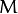

Basic Structures
DataType
-
class DataType
Template “trait” class for OpenCV primitive data types. A primitive OpenCV data type is one of unsigned char, bool, signed char, unsigned short, signed short, int, float, double, or a tuple of values of one of these types, where all the values in the tuple have the same type. Any primitive type from the list can be defined by an identifier in the form CV_<bit-depth>{U|S|F}C(<number_of_channels>), for example: uchar ~ CV_8UC1, 3-element floating-point tuple ~ CV_32FC3, and so on. A universal OpenCV structure that is able to store a single instance of such a primitive data type is
Vec. Multiple instances of such a type can be stored in a std::vector, Mat, Mat_, SparseMat, SparseMat_, or any other container that is able to store Vec instances.
The DataType class is basically used to provide a description of such primitive data types without adding any fields or methods to the corresponding classes (and it is actually impossible to add anything to primitive C/C++ data types). This technique is known in C++ as class traits. It is not DataType itself that is used but its specialized versions, such as:
template<> class DataType<uchar>
{
typedef uchar value_type;
typedef int work_type;
typedef uchar channel_type;
enum { channel_type = CV_8U, channels = 1, fmt='u', type = CV_8U };
};
...
template<typename _Tp> DataType<std::complex<_Tp> >
{
typedef std::complex<_Tp> value_type;
typedef std::complex<_Tp> work_type;
typedef _Tp channel_type;
// DataDepth is another helper trait class
enum { depth = DataDepth<_Tp>::value, channels=2,
fmt=(channels-1)*256+DataDepth<_Tp>::fmt,
type=CV_MAKETYPE(depth, channels) };
};
...
The main purpose of this class is to convert compilation-time type information to an OpenCV-compatible data type identifier, for example:
// allocates a 30x40 floating-point matrix
Mat A(30, 40, DataType<float>::type);
Mat B = Mat_<std::complex<double> >(3, 3);
// the statement below will print 6, 2 /*, that is depth == CV_64F, channels == 2 */
cout << B.depth() << ", " << B.channels() << endl;
So, such traits are used to tell OpenCV which data type you are working with, even if such a type is not native to OpenCV. For example, the matrix B initialization above is compiled because OpenCV defines the proper specialized template class DataType<complex<_Tp> > . This mechanism is also useful (and used in OpenCV this way) for generic algorithms implementations.
Point_
-
class Point_
template<typename _Tp> class CV_EXPORTS Point_
{
public:
typedef _Tp value_type;
// various constructors
Point_();
Point_(_Tp _x, _Tp _y);
Point_(const Point_& pt);
Point_(const CvPoint& pt);
Point_(const CvPoint2D32f& pt);
Point_(const Size_<_Tp>& sz);
Point_(const Vec<_Tp, 2>& v);
Point_& operator = (const Point_& pt);
//! conversion to another data type
template<typename _Tp2> operator Point_<_Tp2>() const;
//! conversion to the old-style C structures
operator CvPoint() const;
operator CvPoint2D32f() const;
operator Vec<_Tp, 2>() const;
//! dot product
_Tp dot(const Point_& pt) const;
//! dot product computed in double-precision arithmetics
double ddot(const Point_& pt) const;
//! cross-product
double cross(const Point_& pt) const;
//! checks whether the point is inside the specified rectangle
bool inside(const Rect_<_Tp>& r) const;
_Tp x, y; //< the point coordinates
};
Template class for 2D points specified by its coordinates
 and
and
 .
An instance of the class is interchangeable with C structures, CvPoint and CvPoint2D32f . There is also a cast operator to convert point coordinates to the specified type. The conversion from floating-point coordinates to integer coordinates is done by rounding. Commonly, the conversion uses this
operation for each of the coordinates. Besides the class members listed in the declaration above, the following operations on points are implemented:
.
An instance of the class is interchangeable with C structures, CvPoint and CvPoint2D32f . There is also a cast operator to convert point coordinates to the specified type. The conversion from floating-point coordinates to integer coordinates is done by rounding. Commonly, the conversion uses this
operation for each of the coordinates. Besides the class members listed in the declaration above, the following operations on points are implemented:
pt1 = pt2 + pt3;
pt1 = pt2 - pt3;
pt1 = pt2 * a;
pt1 = a * pt2;
pt1 = pt2 / a;
pt1 += pt2;
pt1 -= pt2;
pt1 *= a;
pt1 /= a;
double value = norm(pt); // L2 norm
pt1 == pt2;
pt1 != pt2;
For your convenience, the following type aliases are defined:
typedef Point_<int> Point2i;
typedef Point2i Point;
typedef Point_<float> Point2f;
typedef Point_<double> Point2d;
Example:
Point2f a(0.3f, 0.f), b(0.f, 0.4f);
Point pt = (a + b)*10.f;
cout << pt.x << ", " << pt.y << endl;
Point3_
-
class Point3_
template<typename _Tp> class CV_EXPORTS Point3_
{
public:
typedef _Tp value_type;
// various constructors
Point3_();
Point3_(_Tp _x, _Tp _y, _Tp _z);
Point3_(const Point3_& pt);
explicit Point3_(const Point_<_Tp>& pt);
Point3_(const CvPoint3D32f& pt);
Point3_(const Vec<_Tp, 3>& v);
Point3_& operator = (const Point3_& pt);
//! conversion to another data type
template<typename _Tp2> operator Point3_<_Tp2>() const;
//! conversion to the old-style CvPoint...
operator CvPoint3D32f() const;
//! conversion to cv::Vec<>
operator Vec<_Tp, 3>() const;
//! dot product
_Tp dot(const Point3_& pt) const;
//! dot product computed in double-precision arithmetics
double ddot(const Point3_& pt) const;
//! cross product of the 2 3D points
Point3_ cross(const Point3_& pt) const;
_Tp x, y, z; //< the point coordinates
};
Template class for 3D points specified by its coordinates
,
and
.
An instance of the class is interchangeable with the C structure CvPoint2D32f . Similarly to Point_ , the coordinates of 3D points can be converted to another type. The vector arithmetic and comparison operations are also supported.
The following Point3_<> aliases are available:
typedef Point3_<int> Point3i;
typedef Point3_<float> Point3f;
typedef Point3_<double> Point3d;
Size_
-
class Size_
template<typename _Tp> class CV_EXPORTS Size_
{
public:
typedef _Tp value_type;
//! various constructors
Size_();
Size_(_Tp _width, _Tp _height);
Size_(const Size_& sz);
Size_(const CvSize& sz);
Size_(const CvSize2D32f& sz);
Size_(const Point_<_Tp>& pt);
Size_& operator = (const Size_& sz);
//! the area (width*height)
_Tp area() const;
//! conversion of another data type.
template<typename _Tp2> operator Size_<_Tp2>() const;
//! conversion to the old-style OpenCV types
operator CvSize() const;
operator CvSize2D32f() const;
_Tp width, height; // the width and the height
};
Template class for specifying the size of an image or rectangle. The class includes two members called width and height. The structure can be converted to and from the old OpenCV structures
CvSize and CvSize2D32f . The same set of arithmetic and comparison operations as for Point_ is available.
OpenCV defines the following Size_<> aliases:
typedef Size_<int> Size2i;
typedef Size2i Size;
typedef Size_<float> Size2f;
Rect_
-
class Rect_
template<typename _Tp> class CV_EXPORTS Rect_
{
public:
typedef _Tp value_type;
//! various constructors
Rect_();
Rect_(_Tp _x, _Tp _y, _Tp _width, _Tp _height);
Rect_(const Rect_& r);
Rect_(const CvRect& r);
Rect_(const Point_<_Tp>& org, const Size_<_Tp>& sz);
Rect_(const Point_<_Tp>& pt1, const Point_<_Tp>& pt2);
Rect_& operator = ( const Rect_& r );
//! the top-left corner
Point_<_Tp> tl() const;
//! the bottom-right corner
Point_<_Tp> br() const;
//! size (width, height) of the rectangle
Size_<_Tp> size() const;
//! area (width*height) of the rectangle
_Tp area() const;
//! conversion to another data type
template<typename _Tp2> operator Rect_<_Tp2>() const;
//! conversion to the old-style CvRect
operator CvRect() const;
//! checks whether the rectangle contains the point
bool contains(const Point_<_Tp>& pt) const;
_Tp x, y, width, height; //< the top-left corner, as well as width and height of the rectangle
};
Template class for 2D rectangles, described by the following parameters:
- Coordinates of the top-left corner. This is a default interpretation of Rect_::x and Rect_::y in OpenCV. Though, in your algorithms you may count x and y from the bottom-left corner.
- Rectangle width and height.
OpenCV typically assumes that the top and left boundary of the rectangle are inclusive, while the right and bottom boundaries are not. For example, the method Rect_::contains returns true if
Virtually every loop over an image
ROI in OpenCV (where ROI is specified by Rect_<int> ) is implemented as:
for(int y = roi.y; y < roi.y + roi.height; y++)
for(int x = roi.x; x < roi.x + roi.width; x++)
{
// ...
}
In addition to the class members, the following operations on rectangles are implemented:
- (shifting a rectangle by a certain offset)
- (expanding or shrinking a rectangle by a certain amount)
- rect += point, rect -= point, rect += size, rect -= size (augmenting operations)
- rect = rect1 & rect2 (rectangle intersection)
- rect = rect1 | rect2 (minimum area rectangle containing rect1 and rect2 )
- rect &= rect1, rect |= rect1 (and the corresponding augmenting operations)
- rect == rect1, rect != rect1 (rectangle comparison)
This is an example how the partial ordering on rectangles can be established (rect1
 rect2):
rect2):
template<typename _Tp> inline bool
operator <= (const Rect_<_Tp>& r1, const Rect_<_Tp>& r2)
{
return (r1 & r2) == r1;
}
For your convenience, the Rect_<> alias is available:
RotatedRect
-
class RotatedRect
class CV_EXPORTS RotatedRect
{
public:
//! various constructors
RotatedRect();
RotatedRect(const Point2f& center, const Size2f& size, float angle);
RotatedRect(const CvBox2D& box);
RotatedRect(const Point2f& point1, const Point2f& point2, const Point2f& point3);
//! returns 4 vertices of the rectangle
void points(Point2f pts[]) const;
//! returns the minimal up-right rectangle containing the rotated rectangle
Rect boundingRect() const;
//! conversion to the old-style CvBox2D structure
operator CvBox2D() const;
Point2f center; //< the rectangle mass center
Size2f size; //< width and height of the rectangle
float angle; //< the rotation angle. When the angle is 0, 90, 180, 270 etc., the rectangle becomes an up-right rectangle.
};
The class represents rotated (i.e. not up-right) rectangles on a plane. Each rectangle is specified by the center point (mass center), length of each side (represented by cv::Size2f structure) and the rotation angle in degrees.
-
C++: RotatedRect::RotatedRect()
-
C++: RotatedRect::RotatedRect(const Point2f& center, const Size2f& size, float angle)
| Parameters: |
- center – The rectangle mass center.
- size – Width and height of the rectangle.
- angle – The rotation angle in a clockwise direction. When the angle is 0, 90, 180, 270 etc., the rectangle becomes an up-right rectangle.
- box – The rotated rectangle parameters as the obsolete CvBox2D structure.
|
|---|
-
C++: RotatedRect::RotatedRect(const Point2f& point1, const Point2f& point2, const Point2f& point3)
| Parameters: |
- point1 –
- point2 –
- point3 – Any 3 end points of the RotatedRect. They must be given in order (either clockwise or anticlockwise).
|
|---|
-
C++: void RotatedRect::points(Point2f pts[]) const
-
C++: Rect RotatedRect::boundingRect() const
| Parameters: |
- pts – The points array for storing rectangle vertices.
|
|---|
The sample below demonstrates how to use RotatedRect:
Mat image(200, 200, CV_8UC3, Scalar(0));
RotatedRect rRect = RotatedRect(Point2f(100,100), Size2f(100,50), 30);
Point2f vertices[4];
rRect.points(vertices);
for (int i = 0; i < 4; i++)
line(image, vertices[i], vertices[(i+1)%4], Scalar(0,255,0));
Rect brect = rRect.boundingRect();
rectangle(image, brect, Scalar(255,0,0));
imshow("rectangles", image);
waitKey(0);

TermCriteria
-
class TermCriteria
class CV_EXPORTS TermCriteria
{
public:
enum
{
COUNT=1, //!< the maximum number of iterations or elements to compute
MAX_ITER=COUNT, //!< ditto
EPS=2 //!< the desired accuracy or change in parameters at which the iterative algorithm stops
};
//! default constructor
TermCriteria();
//! full constructor
TermCriteria(int type, int maxCount, double epsilon);
//! conversion from CvTermCriteria
TermCriteria(const CvTermCriteria& criteria);
//! conversion to CvTermCriteria
operator CvTermCriteria() const;
int type; //!< the type of termination criteria: COUNT, EPS or COUNT + EPS
int maxCount; // the maximum number of iterations/elements
double epsilon; // the desired accuracy
};
The class defining termination criteria for iterative algorithms. You can initialize it by default constructor and then override any parameters, or the structure may be fully initialized using the advanced variant of the constructor.
TermCriteria::TermCriteria
The constructors.
-
C++: TermCriteria::TermCriteria()
-
C++: TermCriteria::TermCriteria(int type, int maxCount, double epsilon)
| Parameters: |
- type – The type of termination criteria: TermCriteria::COUNT, TermCriteria::EPS or TermCriteria::COUNT + TermCriteria::EPS.
- maxCount – The maximum number of iterations or elements to compute.
- epsilon – The desired accuracy or change in parameters at which the iterative algorithm stops.
- criteria – Termination criteria in the deprecated CvTermCriteria format.
|
|---|
Matx
-
class Matx
Template class for small matrices whose type and size are known at compilation time:
template<typename _Tp, int m, int n> class Matx {...};
typedef Matx<float, 1, 2> Matx12f;
typedef Matx<double, 1, 2> Matx12d;
...
typedef Matx<float, 1, 6> Matx16f;
typedef Matx<double, 1, 6> Matx16d;
typedef Matx<float, 2, 1> Matx21f;
typedef Matx<double, 2, 1> Matx21d;
...
typedef Matx<float, 6, 1> Matx61f;
typedef Matx<double, 6, 1> Matx61d;
typedef Matx<float, 2, 2> Matx22f;
typedef Matx<double, 2, 2> Matx22d;
...
typedef Matx<float, 6, 6> Matx66f;
typedef Matx<double, 6, 6> Matx66d;
If you need a more flexible type, use Mat . The elements of the matrix M are accessible using the M(i,j) notation. Most of the common matrix operations (see also
Matrix Expressions ) are available. To do an operation on Matx that is not implemented, you can easily convert the matrix to
Mat and backwards.
Matx33f m(1, 2, 3,
4, 5, 6,
7, 8, 9);
cout << sum(Mat(m*m.t())) << endl;
Vec
-
class Vec
Template class for short numerical vectors, a partial case of Matx:
template<typename _Tp, int n> class Vec : public Matx<_Tp, n, 1> {...};
typedef Vec<uchar, 2> Vec2b;
typedef Vec<uchar, 3> Vec3b;
typedef Vec<uchar, 4> Vec4b;
typedef Vec<short, 2> Vec2s;
typedef Vec<short, 3> Vec3s;
typedef Vec<short, 4> Vec4s;
typedef Vec<int, 2> Vec2i;
typedef Vec<int, 3> Vec3i;
typedef Vec<int, 4> Vec4i;
typedef Vec<float, 2> Vec2f;
typedef Vec<float, 3> Vec3f;
typedef Vec<float, 4> Vec4f;
typedef Vec<float, 6> Vec6f;
typedef Vec<double, 2> Vec2d;
typedef Vec<double, 3> Vec3d;
typedef Vec<double, 4> Vec4d;
typedef Vec<double, 6> Vec6d;
It is possible to convert Vec<T,2> to/from Point_, Vec<T,3> to/from Point3_ , and Vec<T,4> to CvScalar or Scalar_. Use operator[] to access the elements of Vec.
All the expected vector operations are also implemented:
- v1 = v2 + v3
- v1 = v2 - v3
- v1 = v2 * scale
- v1 = scale * v2
- v1 = -v2
- v1 += v2 and other augmenting operations
- v1 == v2, v1 != v2
- norm(v1) (euclidean norm)
The Vec class is commonly used to describe pixel types of multi-channel arrays. See Mat for details.
Scalar_
-
class Scalar_
Template class for a 4-element vector derived from Vec.
template<typename _Tp> class CV_EXPORTS Scalar_ : public Vec<_Tp, 4>
{
public:
//! various constructors
Scalar_();
Scalar_(_Tp v0, _Tp v1, _Tp v2=0, _Tp v3=0);
Scalar_(const CvScalar& s);
Scalar_(_Tp v0);
//! returns a scalar with all elements set to v0
static Scalar_<_Tp> all(_Tp v0);
//! conversion to the old-style CvScalar
operator CvScalar() const;
//! conversion to another data type
template<typename T2> operator Scalar_<T2>() const;
//! per-element product
Scalar_<_Tp> mul(const Scalar_<_Tp>& a, double scale=1 ) const;
// returns (v0, -v1, -v2, -v3)
Scalar_<_Tp> conj() const;
// returns true iff v1 == v2 == v3 == 0
bool isReal() const;
};
typedef Scalar_<double> Scalar;
Being derived from Vec<_Tp, 4> , Scalar_ and Scalar can be used just as typical 4-element vectors. In addition, they can be converted to/from CvScalar . The type Scalar is widely used in OpenCV to pass pixel values.
Range
-
class Range
Template class specifying a continuous subsequence (slice) of a sequence.
class CV_EXPORTS Range
{
public:
Range();
Range(int _start, int _end);
Range(const CvSlice& slice);
int size() const;
bool empty() const;
static Range all();
operator CvSlice() const;
int start, end;
};
The class is used to specify a row or a column span in a matrix (
Mat ) and for many other purposes. Range(a,b) is basically the same as a:b in Matlab or a..b in Python. As in Python, start is an inclusive left boundary of the range and end is an exclusive right boundary of the range. Such a half-opened interval is usually denoted as
.
The static method Range::all() returns a special variable that means “the whole sequence” or “the whole range”, just like ” : ” in Matlab or ” ... ” in Python. All the methods and functions in OpenCV that take Range support this special Range::all() value. But, of course, in case of your own custom processing, you will probably have to check and handle it explicitly:
void my_function(..., const Range& r, ....)
{
if(r == Range::all()) {
// process all the data
}
else {
// process [r.start, r.end)
}
}
KeyPoint
-
class KeyPoint
Data structure for salient point detectors.
-
Point2f pt
coordinates of the keypoint
-
float size
diameter of the meaningful keypoint neighborhood
-
float angle
computed orientation of the keypoint (-1 if not applicable). Its possible values are in a range [0,360) degrees. It is measured relative to image coordinate system (y-axis is directed downward), ie in clockwise.
-
float response
the response by which the most strong keypoints have been selected. Can be used for further sorting or subsampling
-
int octave
octave (pyramid layer) from which the keypoint has been extracted
-
int class_id
object id that can be used to clustered keypoints by an object they belong to
KeyPoint::KeyPoint
The keypoint constructors
-
C++: KeyPoint::KeyPoint()
-
C++: KeyPoint::KeyPoint(Point2f _pt, float _size, float _angle=-1, float _response=0, int _octave=0, int _class_id=-1)
-
C++: KeyPoint::KeyPoint(float x, float y, float _size, float _angle=-1, float _response=0, int _octave=0, int _class_id=-1)
-
Python: cv2.KeyPoint([x, y, _size[, _angle[, _response[, _octave[, _class_id]]]]]) → <KeyPoint object>
| Parameters: |
- x – x-coordinate of the keypoint
- y – y-coordinate of the keypoint
- _pt – x & y coordinates of the keypoint
- _size – keypoint diameter
- _angle – keypoint orientation
- _response – keypoint detector response on the keypoint (that is, strength of the keypoint)
- _octave – pyramid octave in which the keypoint has been detected
- _class_id – object id
|
|---|
KeyPoint::convert
This method converts vector of keypoints to vector of points or the reverse, where each keypoint is assigned the same size and the same orientation.
-
C++: void KeyPoint::convert(const std::vector<KeyPoint>& keypoints, std::vector<Point2f>& points2f, const std::vector<int>& keypointIndexes=std::vector<int>())
-
C++: void KeyPoint::convert(const std::vector<Point2f>& points2f, std::vector<KeyPoint>& keypoints, float size=1, float response=1, int octave=0, int class_id=-1)
-
Python: cv2.KeyPoint_convert(keypoints[, keypointIndexes]) → points2f
-
Python: cv2.KeyPoint_convert(points2f[, size[, response[, octave[, class_id]]]]) → keypoints
| Parameters: |
- keypoints – Keypoints obtained from any feature detection algorithm like SIFT/SURF/ORB
- points2f – Array of (x,y) coordinates of each keypoint
- keypointIndexes – Array of indexes of keypoints to be converted to points. (Acts like a mask to convert only specified keypoints)
- _size – keypoint diameter
- _response – keypoint detector response on the keypoint (that is, strength of the keypoint)
- _octave – pyramid octave in which the keypoint has been detected
- _class_id – object id
|
|---|
KeyPoint::overlap
This method computes overlap for pair of keypoints. Overlap is the ratio between area of keypoint regions’ intersection and area of keypoint regions’ union (considering keypoint region as circle). If they don’t overlap, we get zero. If they coincide at same location with same size, we get 1.
-
C++: float KeyPoint::overlap(const KeyPoint& kp1, const KeyPoint& kp2)
-
Python: cv2.KeyPoint_overlap(kp1, kp2) → retval
| Parameters: |
- kp1 – First keypoint
- kp2 – Second keypoint
|
|---|
DMatch
-
class DMatch
Class for matching keypoint descriptors: query descriptor index,
train descriptor index, train image index, and distance between descriptors.
class DMatch
{
public:
DMatch() : queryIdx(-1), trainIdx(-1), imgIdx(-1),
distance(std::numeric_limits<float>::max()) {}
DMatch( int _queryIdx, int _trainIdx, float _distance ) :
queryIdx(_queryIdx), trainIdx(_trainIdx), imgIdx(-1),
distance(_distance) {}
DMatch( int _queryIdx, int _trainIdx, int _imgIdx, float _distance ) :
queryIdx(_queryIdx), trainIdx(_trainIdx), imgIdx(_imgIdx),
distance(_distance) {}
int queryIdx; // query descriptor index
int trainIdx; // train descriptor index
int imgIdx; // train image index
float distance;
// less is better
bool operator<( const DMatch &m ) const;
};
Ptr
-
class Ptr
Template class for smart pointers with shared ownership.
template<typename T>
struct Ptr
{
typedef T element_type;
Ptr();
template<typename Y>
explicit Ptr(Y* p);
template<typename Y, typename D>
Ptr(Y* p, D d);
Ptr(const Ptr& o);
template<typename Y>
Ptr(const Ptr<Y>& o);
template<typename Y>
Ptr(const Ptr<Y>& o, T* p);
~Ptr();
Ptr& operator = (const Ptr& o);
template<typename Y>
Ptr& operator = (const Ptr<Y>& o);
void release();
template<typename Y>
void reset(Y* p);
template<typename Y, typename D>
void reset(Y* p, D d);
void swap(Ptr& o);
T* get() const;
T& operator * () const;
T* operator -> () const;
operator T* () const;
bool empty() const;
template<typename Y>
Ptr<Y> staticCast() const;
template<typename Y>
Ptr<Y> constCast() const;
template<typename Y>
Ptr<Y> dynamicCast() const;
};
A Ptr<T> pretends to be a pointer to an object of type T.
Unlike an ordinary pointer, however, the object will be automatically
cleaned up once all Ptr instances pointing to it are destroyed.
Ptr is similar to boost::shared_ptr that is part of the Boost library
(http://www.boost.org/doc/libs/release/libs/smart_ptr/shared_ptr.htm)
and std::shared_ptr from the C++11 standard.
This class provides the following advantages:
- Default constructor, copy constructor, and assignment operator for an arbitrary C++ class
or C structure. For some objects, like files, windows, mutexes, sockets, and others, a copy
constructor or an assignment operator are difficult to define. For some other objects, like
complex classifiers in OpenCV, copy constructors are absent and not easy to implement. Finally,
some of complex OpenCV and your own data structures may be written in C.
However, copy constructors and default constructors can simplify programming a lot. Besides,
they are often required (for example, by STL containers). By using a Ptr to such an
object instead of the object itself, you automatically get all of the necessary
constructors and the assignment operator.
- O(1) complexity of the above-mentioned operations. While some structures, like std::vector,
provide a copy constructor and an assignment operator, the operations may take a considerable
amount of time if the data structures are large. But if the structures are put into a Ptr,
the overhead is small and independent of the data size.
- Automatic and customizable cleanup, even for C structures. See the example below with FILE*.
- Heterogeneous collections of objects. The standard STL and most other C++ and OpenCV containers
can store only objects of the same type and the same size. The classical solution to store objects
of different types in the same container is to store pointers to the base class (Base*)
instead but then you lose the automatic memory management. Again, by using Ptr<Base>
instead of raw pointers, you can solve the problem.
A Ptr is said to own a pointer - that is, for each Ptr there is a pointer that will be deleted
once all Ptr instances that own it are destroyed. The owned pointer may be null, in which case nothing is deleted.
Each Ptr also stores a pointer. The stored pointer is the pointer the Ptr pretends to be;
that is, the one you get when you use Ptr::get() or the conversion to T*. It’s usually
the same as the owned pointer, but if you use casts or the general shared-ownership constructor, the two may diverge:
the Ptr will still own the original pointer, but will itself point to something else.
The owned pointer is treated as a black box. The only thing Ptr needs to know about it is how to
delete it. This knowledge is encapsulated in the deleter - an auxiliary object that is associated
with the owned pointer and shared between all Ptr instances that own it. The default deleter is
an instance of DefaultDeleter, which uses the standard C++ delete operator; as such it
will work with any pointer allocated with the standard new operator.
However, if the pointer must be deleted in a different way, you must specify a custom deleter upon
Ptr construction. A deleter is simply a callable object that accepts the pointer as its sole argument.
For example, if you want to wrap FILE, you may do so as follows:
Ptr<FILE> f(fopen("myfile.txt", "w"), fclose);
if(!f) throw ...;
fprintf(f, ....);
...
// the file will be closed automatically by f's destructor.
Alternatively, if you want all pointers of a particular type to be deleted the same way,
you can specialize DefaultDeleter<T>::operator() for that type, like this:
namespace cv {
template<> void DefaultDeleter<FILE>::operator ()(FILE * obj) const
{
fclose(obj);
}
}
For convenience, the following types from the OpenCV C API already have such a specialization
that calls the appropriate release function:
Note
The shared ownership mechanism is implemented with reference counting. As such,
cyclic ownership (e.g. when object a contains a Ptr to object b, which
contains a Ptr to object a) will lead to all involved objects never being
cleaned up. Avoid such situations.
Note
It is safe to concurrently read (but not write) a Ptr instance from multiple threads
and therefore it is normally safe to use it in multi-threaded applications.
The same is true for Mat and other C++ OpenCV classes that use internal
reference counts.
Ptr::Ptr (null)
-
C++: Ptr::Ptr()
The default constructor creates a null Ptr - one that owns and stores a null pointer.
Ptr::Ptr (assuming ownership)
-
C++: template<typename Y> Ptr::Ptr(Y* p)
-
C++: template<typename Y, typename D> Ptr::Ptr(Y* p, D d)
| Parameters: |
- d – Deleter to use for the owned pointer.
- p – Pointer to own.
|
|---|
If p is null, these are equivalent to the default constructor.
Otherwise, these constructors assume ownership of p - that is, the created Ptr owns
and stores p and assumes it is the sole owner of it. Don’t use them if p is already
owned by another Ptr, or else p will get deleted twice.
With the first constructor, DefaultDeleter<Y>() becomes the associated deleter (so p
will eventually be deleted with the standard delete operator). Y must be a complete
type at the point of invocation.
With the second constructor, d becomes the associated deleter.
Y* must be convertible to T*.
Note
It is often easier to use makePtr() instead.
Ptr::Ptr (sharing ownership)
-
C++: Ptr::Ptr(const Ptr& o)
-
C++: template<typename Y> Ptr::Ptr(const Ptr<Y>& o)
-
C++: template<typename Y> Ptr::Ptr(const Ptr<Y>& o, T* p)
| Parameters: |
- o – Ptr to share ownership with.
- p – Pointer to store.
|
|---|
These constructors create a Ptr that shares ownership with another Ptr - that is,
own the same pointer as o.
With the first two, the same pointer is stored, as well; for the second, Y* must be convertible to T*.
With the third, p is stored, and Y may be any type. This constructor allows to have completely
unrelated owned and stored pointers, and should be used with care to avoid confusion. A relatively
benign use is to create a non-owning Ptr, like this:
ptr = Ptr<T>(Ptr<T>(), dont_delete_me); // owns nothing; will not delete the pointer.
Ptr::~Ptr
-
C++: Ptr::~Ptr()
The destructor is equivalent to calling Ptr::release().
Ptr::operator =
-
C++: Ptr& Ptr::operator=(const Ptr& o)
-
C++: template<typename Y> Ptr& Ptr::operator=(const Ptr<Y>& o)
| Parameters: |
- o – Ptr to share ownership with.
|
|---|
Assignment replaces the current Ptr instance with one that owns and stores same
pointers as o and then destroys the old instance.
Ptr::release
-
C++: void Ptr::release()
If no other Ptr instance owns the owned pointer, deletes it with the associated deleter.
Then sets both the owned and the stored pointers to NULL.
Ptr::reset
-
C++: template<typename Y> void Ptr::reset(Y* p)
-
C++: template<typename Y, typename D> void Ptr::reset(Y* p, D d)
| Parameters: |
- d – Deleter to use for the owned pointer.
- p – Pointer to own.
|
|---|
ptr.reset(...) is equivalent to ptr = Ptr<T>(...).
Ptr::swap
-
C++: void Ptr::swap(Ptr& o)
-
Swaps the owned and stored pointers (and deleters, if any) of this and o.
Ptr::get
-
C++: T* Ptr::get() const
Returns the stored pointer.
Ptr pointer emulation
-
C++: T& Ptr::operator*() const
-
C++: T* Ptr::operator->() const
-
C++: Ptr::operator T*() const
These operators are what allows Ptr to pretend to be a pointer.
If ptr is a Ptr<T>, then *ptr is equivalent to *ptr.get()
and ptr->foo is equivalent to ptr.get()->foo. In addition, ptr
is implicitly convertible to T*, and such conversion is equivalent to
ptr.get(). As a corollary, if (ptr) is equivalent to if (ptr.get()).
In other words, a Ptr behaves as if it was its own stored pointer.
Ptr::empty
-
C++: bool Ptr::empty() const
ptr.empty() is equivalent to !ptr.get().
Ptr casts
-
C++: template<typename Y> Ptr<Y> Ptr::staticCast() const
-
C++: template<typename Y> Ptr<Y> Ptr::constCast() const
-
C++: template<typename Y> Ptr<Y> Ptr::dynamicCast() const
If ptr is a Ptr, then ptr.fooCast<Y>() is equivalent to
Ptr<Y>(ptr, foo_cast<Y>(ptr.get())). That is, these functions create
a new Ptr with the same owned pointer and a cast stored pointer.
Ptr global swap
-
C++: template<typename T> void swap(Ptr<T>& ptr1, Ptr<T>& ptr2)
Equivalent to ptr1.swap(ptr2). Provided to help write generic algorithms.
Ptr comparisons
-
C++: template<typename T> bool operator==(const Ptr<T>& ptr1, const Ptr<T>& ptr2)
-
C++: template<typename T> bool operator!=(const Ptr<T>& ptr1, const Ptr<T>& ptr2)
Return whether ptr1.get() and ptr2.get() are equal and not equal, respectively.
makePtr
-
C++: template<typename T> Ptr<T> makePtr()
-
C++: template<typename T, typename A1> Ptr<T> makePtr(const A1& a1)
-
C++: template<typename T, typename A1, typename A2> Ptr<T> makePtr(const A1& a1, const A2& a2)
-
C++: template<typename T, typename A1, typename A2, typename A3> Ptr<T> makePtr(const A1& a1, const A2& a2, const A3& a3)
(and so on...)
makePtr<T>(...) is equivalent to Ptr<T>(new T(...)). It is shorter than the latter, and
it’s marginally safer than using a constructor or Ptr::reset(), since it ensures that
the owned pointer is new and thus not owned by any other Ptr instance.
Unfortunately, perfect forwarding is impossible to implement in C++03, and so makePtr is limited
to constructors of T that have up to 10 arguments, none of which are non-const references.
Mat
-
class Mat
OpenCV C++ n-dimensional dense array class
class CV_EXPORTS Mat
{
public:
// ... a lot of methods ...
...
/*! includes several bit-fields:
- the magic signature
- continuity flag
- depth
- number of channels
*/
int flags;
//! the array dimensionality, >= 2
int dims;
//! the number of rows and columns or (-1, -1) when the array has more than 2 dimensions
int rows, cols;
//! pointer to the data
uchar* data;
//! pointer to the reference counter;
// when array points to user-allocated data, the pointer is NULL
int* refcount;
// other members
...
};
The class Mat represents an n-dimensional dense numerical single-channel or multi-channel array. It can be used to store real or complex-valued vectors and matrices, grayscale or color images, voxel volumes, vector fields, point clouds, tensors, histograms (though, very high-dimensional histograms may be better stored in a SparseMat ). The data layout of the array
 is defined by the array M.step[], so that the address of element
, where
, is computed as:
In case of a 2-dimensional array, the above formula is reduced to:
Note that M.step[i] >= M.step[i+1] (in fact, M.step[i] >= M.step[i+1]*M.size[i+1] ). This means that 2-dimensional matrices are stored row-by-row, 3-dimensional matrices are stored plane-by-plane, and so on. M.step[M.dims-1] is minimal and always equal to the element size M.elemSize() .
So, the data layout in Mat is fully compatible with CvMat, IplImage, and CvMatND types from OpenCV 1.x. It is also compatible with the majority of dense array types from the standard toolkits and SDKs, such as Numpy (ndarray), Win32 (independent device bitmaps), and others, that is, with any array that uses steps (or strides) to compute the position of a pixel. Due to this compatibility, it is possible to make a Mat header for user-allocated data and process it in-place using OpenCV functions.
There are many different ways to create a Mat object. The most popular options are listed below:
Use the create(nrows, ncols, type) method or the similar Mat(nrows, ncols, type[, fillValue]) constructor. A new array of the specified size and type is allocated. type has the same meaning as in the cvCreateMat method.
For example, CV_8UC1 means a 8-bit single-channel array, CV_32FC2 means a 2-channel (complex) floating-point array, and so on.
// make a 7x7 complex matrix filled with 1+3j.
Mat M(7,7,CV_32FC2,Scalar(1,3));
// and now turn M to a 100x60 15-channel 8-bit matrix.
// The old content will be deallocated
M.create(100,60,CV_8UC(15));
As noted in the introduction to this chapter, create() allocates only a new array when the shape or type of the current array are different from the specified ones.
Create a multi-dimensional array:
// create a 100x100x100 8-bit array
int sz[] = {100, 100, 100};
Mat bigCube(3, sz, CV_8U, Scalar::all(0));
It passes the number of dimensions =1 to the Mat constructor but the created array will be 2-dimensional with the number of columns set to 1. So, Mat::dims is always >= 2 (can also be 0 when the array is empty).
Use a copy constructor or assignment operator where there can be an array or expression on the right side (see below). As noted in the introduction, the array assignment is an O(1) operation because it only copies the header and increases the reference counter. The Mat::clone() method can be used to get a full (deep) copy of the array when you need it.
Construct a header for a part of another array. It can be a single row, single column, several rows, several columns, rectangular region in the array (called a minor in algebra) or a diagonal. Such operations are also O(1) because the new header references the same data. You can actually modify a part of the array using this feature, for example:
// add the 5-th row, multiplied by 3 to the 3rd row
M.row(3) = M.row(3) + M.row(5)*3;
// now copy the 7-th column to the 1-st column
// M.col(1) = M.col(7); // this will not work
Mat M1 = M.col(1);
M.col(7).copyTo(M1);
// create a new 320x240 image
Mat img(Size(320,240),CV_8UC3);
// select a ROI
Mat roi(img, Rect(10,10,100,100));
// fill the ROI with (0,255,0) (which is green in RGB space);
// the original 320x240 image will be modified
roi = Scalar(0,255,0);
Due to the additional datastart and dataend members, it is possible to compute a relative sub-array position in the main container array using locateROI():
Mat A = Mat::eye(10, 10, CV_32S);
// extracts A columns, 1 (inclusive) to 3 (exclusive).
Mat B = A(Range::all(), Range(1, 3));
// extracts B rows, 5 (inclusive) to 9 (exclusive).
// that is, C ~ A(Range(5, 9), Range(1, 3))
Mat C = B(Range(5, 9), Range::all());
Size size; Point ofs;
C.locateROI(size, ofs);
// size will be (width=10,height=10) and the ofs will be (x=1, y=5)
As in case of whole matrices, if you need a deep copy, use the clone() method of the extracted sub-matrices.
Make a header for user-allocated data. It can be useful to do the following:
Process “foreign” data using OpenCV (for example, when you implement a DirectShow* filter or a processing module for gstreamer, and so on). For example:
void process_video_frame(const unsigned char* pixels,
int width, int height, int step)
{
Mat img(height, width, CV_8UC3, pixels, step);
GaussianBlur(img, img, Size(7,7), 1.5, 1.5);
}
Quickly initialize small matrices and/or get a super-fast element access.
double m[3][3] = {{a, b, c}, {d, e, f}, {g, h, i}};
Mat M = Mat(3, 3, CV_64F, m).inv();
Partial yet very common cases of this user-allocated data case are conversions from CvMat and IplImage to Mat. For this purpose, there are special constructors taking pointers to CvMat or IplImage and the optional flag indicating whether to copy the data or not.
Backward conversion from Mat to CvMat or IplImage is provided via cast operators Mat::operator CvMat() const and Mat::operator IplImage(). The operators do NOT copy the data.
IplImage* img = cvLoadImage("greatwave.jpg", 1);
Mat mtx(img); // convert IplImage* -> Mat
CvMat oldmat = mtx; // convert Mat -> CvMat
CV_Assert(oldmat.cols == img->width && oldmat.rows == img->height &&
oldmat.data.ptr == (uchar*)img->imageData && oldmat.step == img->widthStep);
Use MATLAB-style array initializers, zeros(), ones(), eye(), for example:
// create a double-precision identity martix and add it to M.
M += Mat::eye(M.rows, M.cols, CV_64F);
Use a comma-separated initializer:
// create a 3x3 double-precision identity matrix
Mat M = (Mat_<double>(3,3) << 1, 0, 0, 0, 1, 0, 0, 0, 1);
With this approach, you first call a constructor of the Mat_ class with the proper parameters, and then you just put << operator followed by comma-separated values that can be constants, variables, expressions, and so on. Also, note the extra parentheses required to avoid compilation errors.
Once the array is created, it is automatically managed via a reference-counting mechanism. If the array header is built on top of user-allocated data, you should handle the data by yourself.
The array data is deallocated when no one points to it. If you want to release the data pointed by a array header before the array destructor is called, use Mat::release() .
The next important thing to learn about the array class is element access. This manual already described how to compute an address of each array element. Normally, you are not required to use the formula directly in the code. If you know the array element type (which can be retrieved using the method Mat::type() ), you can access the element
of a 2-dimensional array as:
M.at<double>(i,j) += 1.f;
assuming that M is a double-precision floating-point array. There are several variants of the method at for a different number of dimensions.
If you need to process a whole row of a 2D array, the most efficient way is to get the pointer to the row first, and then just use the plain C operator [] :
// compute sum of positive matrix elements
// (assuming that M isa double-precision matrix)
double sum=0;
for(int i = 0; i < M.rows; i++)
{
const double* Mi = M.ptr<double>(i);
for(int j = 0; j < M.cols; j++)
sum += std::max(Mi[j], 0.);
}
Some operations, like the one above, do not actually depend on the array shape. They just process elements of an array one by one (or elements from multiple arrays that have the same coordinates, for example, array addition). Such operations are called element-wise. It makes sense to check whether all the input/output arrays are continuous, namely, have no gaps at the end of each row. If yes, process them as a long single row:
// compute the sum of positive matrix elements, optimized variant
double sum=0;
int cols = M.cols, rows = M.rows;
if(M.isContinuous())
{
cols *= rows;
rows = 1;
}
for(int i = 0; i < rows; i++)
{
const double* Mi = M.ptr<double>(i);
for(int j = 0; j < cols; j++)
sum += std::max(Mi[j], 0.);
}
In case of the continuous matrix, the outer loop body is executed just once. So, the overhead is smaller, which is especially noticeable in case of small matrices.
Finally, there are STL-style iterators that are smart enough to skip gaps between successive rows:
// compute sum of positive matrix elements, iterator-based variant
double sum=0;
MatConstIterator_<double> it = M.begin<double>(), it_end = M.end<double>();
for(; it != it_end; ++it)
sum += std::max(*it, 0.);
The matrix iterators are random-access iterators, so they can be passed to any STL algorithm, including std::sort() .
Note
- An example demonstrating the serial out capabilities of cv::Mat can be found at opencv_source_code/samples/cpp/cout_mat.cpp
Matrix Expressions
This is a list of implemented matrix operations that can be combined in arbitrary complex expressions
(here A, B stand for matrices ( Mat ), s for a scalar ( Scalar ),
alpha for a real-valued scalar ( double )):
Addition, subtraction, negation:
A+B, A-B, A+s, A-s, s+A, s-A, -A
Scaling:
A*alpha
Per-element multiplication and division:
A.mul(B), A/B, alpha/A
Matrix multiplication:
A*B
Transposition:
A.t() (means AT)
Matrix inversion and pseudo-inversion, solving linear systems and least-squares problems:
A.inv([method]) (~ A-1) , A.inv([method])*B (~ X: AX=B)
Comparison:
A cmpop B, A cmpop alpha, alpha cmpop A, where cmpop is one of : >, >=, ==, !=, <=, <. The result of comparison is an 8-bit single channel mask whose elements are set to 255 (if the particular element or pair of elements satisfy the condition) or 0.
Bitwise logical operations: A logicop B, A logicop s, s logicop A, ~A, where logicop is one of : &, |, ^.
Element-wise minimum and maximum:
min(A, B), min(A, alpha), max(A, B), max(A, alpha)
Element-wise absolute value:
abs(A)
Cross-product, dot-product:
A.cross(B)
A.dot(B)
Any function of matrix or matrices and scalars that returns a matrix or a scalar, such as norm, mean, sum, countNonZero, trace, determinant, repeat, and others.
Matrix initializers ( Mat::eye(), Mat::zeros(), Mat::ones() ), matrix comma-separated initializers, matrix constructors and operators that extract sub-matrices (see Mat description).
Mat_<destination_type>() constructors to cast the result to the proper type.
Note
Comma-separated initializers and probably some other operations may require additional explicit Mat() or Mat_<T>() constructor calls to resolve a possible ambiguity.
Here are examples of matrix expressions:
// compute pseudo-inverse of A, equivalent to A.inv(DECOMP_SVD)
SVD svd(A);
Mat pinvA = svd.vt.t()*Mat::diag(1./svd.w)*svd.u.t();
// compute the new vector of parameters in the Levenberg-Marquardt algorithm
x -= (A.t()*A + lambda*Mat::eye(A.cols,A.cols,A.type())).inv(DECOMP_CHOLESKY)*(A.t()*err);
// sharpen image using "unsharp mask" algorithm
Mat blurred; double sigma = 1, threshold = 5, amount = 1;
GaussianBlur(img, blurred, Size(), sigma, sigma);
Mat lowConstrastMask = abs(img - blurred) < threshold;
Mat sharpened = img*(1+amount) + blurred*(-amount);
img.copyTo(sharpened, lowContrastMask);
Below is the formal description of the Mat methods.
Mat::Mat
Various Mat constructors
-
C++: Mat::Mat()
-
C++: Mat::Mat(int rows, int cols, int type)
-
C++: Mat::Mat(Size size, int type)
-
C++: Mat::Mat(int rows, int cols, int type, const Scalar& s)
-
C++: Mat::Mat(Size size, int type, const Scalar& s)
-
C++: Mat::Mat(const Mat& m)
-
C++: Mat::Mat(int rows, int cols, int type, void* data, size_t step=AUTO_STEP)
-
C++: Mat::Mat(Size size, int type, void* data, size_t step=AUTO_STEP)
-
C++: Mat::Mat(const Mat& m, const Range& rowRange, const Range& colRange=Range::all() )
-
C++: Mat::Mat(const Mat& m, const Rect& roi)
-
C++: template<typename T, int n> explicit Mat::Mat(const Vec<T, n>& vec, bool copyData=true)
-
C++: template<typename T, int m, int n> explicit Mat::Mat(const Matx<T, m, n>& vec, bool copyData=true)
-
C++: template<typename T> explicit Mat::Mat(const vector<T>& vec, bool copyData=false)
-
C++: Mat::Mat(int ndims, const int* sizes, int type)
-
C++: Mat::Mat(int ndims, const int* sizes, int type, const Scalar& s)
-
C++: Mat::Mat(int ndims, const int* sizes, int type, void* data, const size_t* steps=0)
-
C++: Mat::Mat(const Mat& m, const Range* ranges)
| Parameters: |
- ndims – Array dimensionality.
- rows – Number of rows in a 2D array.
- cols – Number of columns in a 2D array.
- roi – Region of interest.
- size – 2D array size: Size(cols, rows) . In the Size() constructor, the number of rows and the number of columns go in the reverse order.
- sizes – Array of integers specifying an n-dimensional array shape.
- type – Array type. Use CV_8UC1, ..., CV_64FC4 to create 1-4 channel matrices, or CV_8UC(n), ..., CV_64FC(n) to create multi-channel (up to CV_CN_MAX channels) matrices.
- s – An optional value to initialize each matrix element with. To set all the matrix elements to the particular value after the construction, use the assignment operator Mat::operator=(const Scalar& value) .
- data – Pointer to the user data. Matrix constructors that take data and step parameters do not allocate matrix data. Instead, they just initialize the matrix header that points to the specified data, which means that no data is copied. This operation is very efficient and can be used to process external data using OpenCV functions. The external data is not automatically deallocated, so you should take care of it.
- step – Number of bytes each matrix row occupies. The value should include the padding bytes at the end of each row, if any. If the parameter is missing (set to AUTO_STEP ), no padding is assumed and the actual step is calculated as cols*elemSize() . See Mat::elemSize() .
- steps – Array of ndims-1 steps in case of a multi-dimensional array (the last step is always set to the element size). If not specified, the matrix is assumed to be continuous.
- m – Array that (as a whole or partly) is assigned to the constructed matrix. No data is copied by these constructors. Instead, the header pointing to m data or its sub-array is constructed and associated with it. The reference counter, if any, is incremented. So, when you modify the matrix formed using such a constructor, you also modify the corresponding elements of m . If you want to have an independent copy of the sub-array, use Mat::clone() .
- img – Pointer to the old-style IplImage image structure. By default, the data is shared between the original image and the new matrix. But when copyData is set, the full copy of the image data is created.
- vec – STL vector whose elements form the matrix. The matrix has a single column and the number of rows equal to the number of vector elements. Type of the matrix matches the type of vector elements. The constructor can handle arbitrary types, for which there is a properly declared DataType . This means that the vector elements must be primitive numbers or uni-type numerical tuples of numbers. Mixed-type structures are not supported. The corresponding constructor is explicit. Since STL vectors are not automatically converted to Mat instances, you should write Mat(vec) explicitly. Unless you copy the data into the matrix ( copyData=true ), no new elements will be added to the vector because it can potentially yield vector data reallocation, and, thus, the matrix data pointer will be invalid.
- copyData – Flag to specify whether the underlying data of the STL vector or the old-style CvMat or IplImage should be copied to (true) or shared with (false) the newly constructed matrix. When the data is copied, the allocated buffer is managed using Mat reference counting mechanism. While the data is shared, the reference counter is NULL, and you should not deallocate the data until the matrix is not destructed.
- rowRange – Range of the m rows to take. As usual, the range start is inclusive and the range end is exclusive. Use Range::all() to take all the rows.
- colRange – Range of the m columns to take. Use Range::all() to take all the columns.
- ranges – Array of selected ranges of m along each dimensionality.
|
|---|
These are various constructors that form a matrix. As noted in the Automatic Allocation of the Output Data,
often the default constructor is enough, and the proper matrix will be allocated by an OpenCV function. The constructed matrix can further be assigned to another matrix or matrix expression or can be allocated with
Mat::create() . In the former case, the old content is de-referenced.
Mat::~Mat
The Mat destructor.
-
C++: Mat::~Mat()
The matrix destructor calls Mat::release() .
Mat::operator =
Provides matrix assignment operators.
-
C++: Mat& Mat::operator=(const Mat& m)
-
C++: Mat& Mat::operator=(const MatExpr& expr)
-
C++: Mat& Mat::operator=(const Scalar& s)
| Parameters: |
- m – Assigned, right-hand-side matrix. Matrix assignment is an O(1) operation. This means that no data is copied but the data is shared and the reference counter, if any, is incremented. Before assigning new data, the old data is de-referenced via Mat::release() .
- expr – Assigned matrix expression object. As opposite to the first form of the assignment operation, the second form can reuse already allocated matrix if it has the right size and type to fit the matrix expression result. It is automatically handled by the real function that the matrix expressions is expanded to. For example, C=A+B is expanded to add(A, B, C), and add() takes care of automatic C reallocation.
- s – Scalar assigned to each matrix element. The matrix size or type is not changed.
|
|---|
These are available assignment operators. Since they all are very different, make sure to read the operator parameters description.
Mat::row
Creates a matrix header for the specified matrix row.
-
C++: Mat Mat::row(int y) const
-
The method makes a new header for the specified matrix row and returns it. This is an O(1) operation, regardless of the matrix size. The underlying data of the new matrix is shared with the original matrix. Here is the example of one of the classical basic matrix processing operations, axpy, used by LU and many other algorithms:
inline void matrix_axpy(Mat& A, int i, int j, double alpha)
{
A.row(i) += A.row(j)*alpha;
}
Note
In the current implementation, the following code does not work as expected:
Mat A;
...
A.row(i) = A.row(j); // will not work
This happens because A.row(i) forms a temporary header that is further assigned to another header. Remember that each of these operations is O(1), that is, no data is copied. Thus, the above assignment is not true if you may have expected the j-th row to be copied to the i-th row. To achieve that, you should either turn this simple assignment into an expression or use the Mat::copyTo() method:
Mat A;
...
// works, but looks a bit obscure.
A.row(i) = A.row(j) + 0;
// this is a bit longer, but the recommended method.
A.row(j).copyTo(A.row(i));
Mat::col
Creates a matrix header for the specified matrix column.
-
C++: Mat Mat::col(int x) const
| Parameters: |
- x – A 0-based column index.
|
|---|
The method makes a new header for the specified matrix column and returns it. This is an O(1) operation, regardless of the matrix size. The underlying data of the new matrix is shared with the original matrix. See also the
Mat::row() description.
Mat::rowRange
Creates a matrix header for the specified row span.
-
C++: Mat Mat::rowRange(int startrow, int endrow) const
-
C++: Mat Mat::rowRange(const Range& r) const
| Parameters: |
- startrow – An inclusive 0-based start index of the row span.
- endrow – An exclusive 0-based ending index of the row span.
- r – Range structure containing both the start and the end indices.
|
|---|
The method makes a new header for the specified row span of the matrix. Similarly to
Mat::row() and
Mat::col() , this is an O(1) operation.
Mat::colRange
Creates a matrix header for the specified column span.
-
C++: Mat Mat::colRange(int startcol, int endcol) const
-
C++: Mat Mat::colRange(const Range& r) const
| Parameters: |
- startcol – An inclusive 0-based start index of the column span.
- endcol – An exclusive 0-based ending index of the column span.
- r – Range structure containing both the start and the end indices.
|
|---|
The method makes a new header for the specified column span of the matrix. Similarly to
Mat::row() and
Mat::col() , this is an O(1) operation.
Mat::diag
Extracts a diagonal from a matrix, or creates a diagonal matrix.
-
C++: Mat Mat::diag(int d=0 ) const
-
C++: static Mat Mat::diag(const Mat& d)
-
The method makes a new header for the specified matrix diagonal. The new matrix is represented as a single-column matrix. Similarly to
Mat::row() and
Mat::col() , this is an O(1) operation.
Mat::clone
Creates a full copy of the array and the underlying data.
-
C++: Mat Mat::clone() const
The method creates a full copy of the array. The original step[] is not taken into account. So, the array copy is a continuous array occupying total()*elemSize() bytes.
Mat::copyTo
Copies the matrix to another one.
-
C++: void Mat::copyTo(OutputArray m) const
-
C++: void Mat::copyTo(OutputArray m, InputArray mask) const
| Parameters: |
- m – Destination matrix. If it does not have a proper size or type before the operation, it is reallocated.
- mask – Operation mask. Its non-zero elements indicate which matrix elements need to be copied.
|
|---|
The method copies the matrix data to another matrix. Before copying the data, the method invokes
m.create(this->size(), this->type());
so that the destination matrix is reallocated if needed. While m.copyTo(m); works flawlessly, the function does not handle the case of a partial overlap between the source and the destination matrices.
When the operation mask is specified, if the Mat::create call shown above reallocates the matrix, the newly allocated matrix is initialized with all zeros before copying the data.
Mat::convertTo
Converts an array to another data type with optional scaling.
-
C++: void Mat::convertTo(OutputArray m, int rtype, double alpha=1, double beta=0 ) const
| Parameters: |
- m – output matrix; if it does not have a proper size or type before the operation, it is reallocated.
- rtype – desired output matrix type or, rather, the depth since the number of channels are the same as the input has; if rtype is negative, the output matrix will have the same type as the input.
- alpha – optional scale factor.
- beta – optional delta added to the scaled values.
|
|---|
The method converts source pixel values to the target data type. saturate_cast<> is applied at the end to avoid possible overflows:
Mat::assignTo
Provides a functional form of convertTo.
-
C++: void Mat::assignTo(Mat& m, int type=-1 ) const
| Parameters: |
- m – Destination array.
- type – Desired destination array depth (or -1 if it should be the same as the source type).
|
|---|
This is an internally used method called by the
Matrix Expressions engine.
Mat::setTo
Sets all or some of the array elements to the specified value.
-
C++: Mat& Mat::setTo(InputArray value, InputArray mask=noArray() )
| Parameters: |
- value – Assigned scalar converted to the actual array type.
- mask – Operation mask of the same size as *this. This is an advanced variant of the Mat::operator=(const Scalar& s) operator.
|
|---|
Mat::reshape
Changes the shape and/or the number of channels of a 2D matrix without copying the data.
-
C++: Mat Mat::reshape(int cn, int rows=0) const
| Parameters: |
- cn – New number of channels. If the parameter is 0, the number of channels remains the same.
- rows – New number of rows. If the parameter is 0, the number of rows remains the same.
|
|---|
The method makes a new matrix header for *this elements. The new matrix may have a different size and/or different number of channels. Any combination is possible if:
- No extra elements are included into the new matrix and no elements are excluded. Consequently, the product rows*cols*channels() must stay the same after the transformation.
- No data is copied. That is, this is an O(1) operation. Consequently, if you change the number of rows, or the operation changes the indices of elements row in some other way, the matrix must be continuous. See
Mat::isContinuous() .
For example, if there is a set of 3D points stored as an STL vector, and you want to represent the points as a 3xN matrix, do the following:
std::vector<Point3f> vec;
...
Mat pointMat = Mat(vec). // convert vector to Mat, O(1) operation
reshape(1). // make Nx3 1-channel matrix out of Nx1 3-channel.
// Also, an O(1) operation
t(); // finally, transpose the Nx3 matrix.
// This involves copying all the elements
Mat::t
Transposes a matrix.
-
C++: MatExpr Mat::t() const
The method performs matrix transposition by means of matrix expressions. It does not perform the actual transposition but returns a temporary matrix transposition object that can be further used as a part of more complex matrix expressions or can be assigned to a matrix:
Mat A1 = A + Mat::eye(A.size(), A.type())*lambda;
Mat C = A1.t()*A1; // compute (A + lambda*I)^t * (A + lamda*I)
Mat::inv
Inverses a matrix.
-
C++: MatExpr Mat::inv(int method=DECOMP_LU) const
-
The method performs a matrix inversion by means of matrix expressions. This means that a temporary matrix inversion object is returned by the method and can be used further as a part of more complex matrix expressions or can be assigned to a matrix.
Mat::mul
Performs an element-wise multiplication or division of the two matrices.
-
C++: MatExpr Mat::mul(InputArray m, double scale=1) const
| Parameters: |
- m – Another array of the same type and the same size as *this, or a matrix expression.
- scale – Optional scale factor.
|
|---|
The method returns a temporary object encoding per-element array multiplication, with optional scale. Note that this is not a matrix multiplication that corresponds to a simpler “*” operator.
Example:
Mat C = A.mul(5/B); // equivalent to divide(A, B, C, 5)
Mat::cross
Computes a cross-product of two 3-element vectors.
-
C++: Mat Mat::cross(InputArray m) const
| Parameters: |
- m – Another cross-product operand.
|
|---|
The method computes a cross-product of two 3-element vectors. The vectors must be 3-element floating-point vectors of the same shape and size. The result is another 3-element vector of the same shape and type as operands.
Mat::dot
Computes a dot-product of two vectors.
-
C++: double Mat::dot(InputArray m) const
| Parameters: |
- m – another dot-product operand.
|
|---|
The method computes a dot-product of two matrices. If the matrices are not single-column or single-row vectors, the top-to-bottom left-to-right scan ordering is used to treat them as 1D vectors. The vectors must have the same size and type. If the matrices have more than one channel, the dot products from all the channels are summed together.
Mat::zeros
Returns a zero array of the specified size and type.
-
C++: static MatExpr Mat::zeros(int rows, int cols, int type)
-
C++: static MatExpr Mat::zeros(Size size, int type)
-
C++: static MatExpr Mat::zeros(int ndims, const int* sz, int type)
| Parameters: |
- ndims – Array dimensionality.
- rows – Number of rows.
- cols – Number of columns.
- size – Alternative to the matrix size specification Size(cols, rows) .
- sz – Array of integers specifying the array shape.
- type – Created matrix type.
|
|---|
The method returns a Matlab-style zero array initializer. It can be used to quickly form a constant array as a function parameter, part of a matrix expression, or as a matrix initializer.
Mat A;
A = Mat::zeros(3, 3, CV_32F);
In the example above, a new matrix is allocated only if A is not a 3x3 floating-point matrix. Otherwise, the existing matrix A is filled with zeros.
Mat::ones
Returns an array of all 1’s of the specified size and type.
-
C++: static MatExpr Mat::ones(int rows, int cols, int type)
-
C++: static MatExpr Mat::ones(Size size, int type)
-
C++: static MatExpr Mat::ones(int ndims, const int* sz, int type)
| Parameters: |
- ndims – Array dimensionality.
- rows – Number of rows.
- cols – Number of columns.
- size – Alternative to the matrix size specification Size(cols, rows) .
- sz – Array of integers specifying the array shape.
- type – Created matrix type.
|
|---|
The method returns a Matlab-style 1’s array initializer, similarly to
Mat::zeros(). Note that using this method you can initialize an array with an arbitrary value, using the following Matlab idiom:
Mat A = Mat::ones(100, 100, CV_8U)*3; // make 100x100 matrix filled with 3.
The above operation does not form a 100x100 matrix of 1’s and then multiply it by 3. Instead, it just remembers the scale factor (3 in this case) and use it when actually invoking the matrix initializer.
Mat::eye
Returns an identity matrix of the specified size and type.
-
C++: static MatExpr Mat::eye(int rows, int cols, int type)
-
C++: static MatExpr Mat::eye(Size size, int type)
| Parameters: |
- rows – Number of rows.
- cols – Number of columns.
- size – Alternative matrix size specification as Size(cols, rows) .
- type – Created matrix type.
|
|---|
The method returns a Matlab-style identity matrix initializer, similarly to
Mat::zeros(). Similarly to
Mat::ones(), you can use a scale operation to create a scaled identity matrix efficiently:
// make a 4x4 diagonal matrix with 0.1's on the diagonal.
Mat A = Mat::eye(4, 4, CV_32F)*0.1;
Mat::create
Allocates new array data if needed.
-
C++: void Mat::create(int rows, int cols, int type)
-
C++: void Mat::create(Size size, int type)
-
C++: void Mat::create(int ndims, const int* sizes, int type)
| Parameters: |
- ndims – New array dimensionality.
- rows – New number of rows.
- cols – New number of columns.
- size – Alternative new matrix size specification: Size(cols, rows)
- sizes – Array of integers specifying a new array shape.
- type – New matrix type.
|
|---|
This is one of the key Mat methods. Most new-style OpenCV functions and methods that produce arrays call this method for each output array. The method uses the following algorithm:
- If the current array shape and the type match the new ones, return immediately. Otherwise, de-reference the previous data by calling
Mat::release().
- Initialize the new header.
- Allocate the new data of total()*elemSize() bytes.
- Allocate the new, associated with the data, reference counter and set it to 1.
Such a scheme makes the memory management robust and efficient at the same time and helps avoid extra typing for you. This means that usually there is no need to explicitly allocate output arrays. That is, instead of writing:
Mat color;
...
Mat gray(color.rows, color.cols, color.depth());
cvtColor(color, gray, COLOR_BGR2GRAY);
you can simply write:
Mat color;
...
Mat gray;
cvtColor(color, gray, COLOR_BGR2GRAY);
because cvtColor , as well as the most of OpenCV functions, calls Mat::create() for the output array internally.
Mat::addref
Increments the reference counter.
-
C++: void Mat::addref()
The method increments the reference counter associated with the matrix data. If the matrix header points to an external data set (see
Mat::Mat() ), the reference counter is NULL, and the method has no effect in this case. Normally, to avoid memory leaks, the method should not be called explicitly. It is called implicitly by the matrix assignment operator. The reference counter increment is an atomic operation on the platforms that support it. Thus, it is safe to operate on the same matrices asynchronously in different threads.
Mat::release
Decrements the reference counter and deallocates the matrix if needed.
-
C++: void Mat::release()
The method decrements the reference counter associated with the matrix data. When the reference counter reaches 0, the matrix data is deallocated and the data and the reference counter pointers are set to NULL’s. If the matrix header points to an external data set (see
Mat::Mat() ), the reference counter is NULL, and the method has no effect in this case.
This method can be called manually to force the matrix data deallocation. But since this method is automatically called in the destructor, or by any other method that changes the data pointer, it is usually not needed. The reference counter decrement and check for 0 is an atomic operation on the platforms that support it. Thus, it is safe to operate on the same matrices asynchronously in different threads.
Mat::resize
Changes the number of matrix rows.
-
C++: void Mat::resize(size_t sz)
-
C++: void Mat::resize(size_t sz, const Scalar& s)
| Parameters: |
- sz – New number of rows.
- s – Value assigned to the newly added elements.
|
|---|
The methods change the number of matrix rows. If the matrix is reallocated, the first min(Mat::rows, sz) rows are preserved. The methods emulate the corresponding methods of the STL vector class.
Mat::reserve
Reserves space for the certain number of rows.
-
C++: void Mat::reserve(size_t sz)
-
The method reserves space for sz rows. If the matrix already has enough space to store sz rows, nothing happens. If the matrix is reallocated, the first Mat::rows rows are preserved. The method emulates the corresponding method of the STL vector class.
Mat::push_back
Adds elements to the bottom of the matrix.
-
C++: template<typename T> void Mat::push_back(const T& elem)
-
C++: void Mat::push_back(const Mat& m)
| Parameters: |
- elem – Added element(s).
- m – Added line(s).
|
|---|
The methods add one or more elements to the bottom of the matrix. They emulate the corresponding method of the STL vector class. When elem is Mat , its type and the number of columns must be the same as in the container matrix.
Mat::pop_back
Removes elements from the bottom of the matrix.
-
C++: template<typename T> void Mat::pop_back(size_t nelems=1)
| Parameters: |
- nelems – Number of removed rows. If it is greater than the total number of rows, an exception is thrown.
|
|---|
The method removes one or more rows from the bottom of the matrix.
Mat::locateROI
Locates the matrix header within a parent matrix.
-
C++: void Mat::locateROI(Size& wholeSize, Point& ofs) const
| Parameters: |
- wholeSize – Output parameter that contains the size of the whole matrix containing *this as a part.
- ofs – Output parameter that contains an offset of *this inside the whole matrix.
|
|---|
After you extracted a submatrix from a matrix using
Mat::row(),
Mat::col(),
Mat::rowRange(),
Mat::colRange() , and others, the resultant submatrix points just to the part of the original big matrix. However, each submatrix contains information (represented by datastart and dataend fields) that helps reconstruct the original matrix size and the position of the extracted submatrix within the original matrix. The method locateROI does exactly that.
Mat::adjustROI
Adjusts a submatrix size and position within the parent matrix.
-
C++: Mat& Mat::adjustROI(int dtop, int dbottom, int dleft, int dright)
| Parameters: |
- dtop – Shift of the top submatrix boundary upwards.
- dbottom – Shift of the bottom submatrix boundary downwards.
- dleft – Shift of the left submatrix boundary to the left.
- dright – Shift of the right submatrix boundary to the right.
|
|---|
The method is complimentary to
Mat::locateROI() . The typical use of these functions is to determine the submatrix position within the parent matrix and then shift the position somehow. Typically, it can be required for filtering operations when pixels outside of the ROI should be taken into account. When all the method parameters are positive, the ROI needs to grow in all directions by the specified amount, for example:
In this example, the matrix size is increased by 4 elements in each direction. The matrix is shifted by 2 elements to the left and 2 elements up, which brings in all the necessary pixels for the filtering with the 5x5 kernel.
adjustROI forces the adjusted ROI to be inside of the parent matrix that is boundaries of the adjusted ROI are constrained by boundaries of the parent matrix. For example, if the submatrix A is located in the first row of a parent matrix and you called A.adjustROI(2, 2, 2, 2) then A will not be increased in the upward direction.
The function is used internally by the OpenCV filtering functions, like
filter2D() , morphological operations, and so on.
Mat::operator()
Extracts a rectangular submatrix.
-
C++: Mat Mat::operator()(Range rowRange, Range colRange) const
-
C++: Mat Mat::operator()(const Rect& roi) const
-
C++: Mat Mat::operator()(const Range* ranges) const
| Parameters: |
- rowRange – Start and end row of the extracted submatrix. The upper boundary is not included. To select all the rows, use Range::all().
- colRange – Start and end column of the extracted submatrix. The upper boundary is not included. To select all the columns, use Range::all().
- roi – Extracted submatrix specified as a rectangle.
- ranges – Array of selected ranges along each array dimension.
|
|---|
The operators make a new header for the specified sub-array of *this . They are the most generalized forms of
Mat::row(),
Mat::col(),
Mat::rowRange(), and
Mat::colRange() . For example, A(Range(0, 10), Range::all()) is equivalent to A.rowRange(0, 10) . Similarly to all of the above, the operators are O(1) operations, that is, no matrix data is copied.
Mat::total
Returns the total number of array elements.
-
C++: size_t Mat::total() const
The method returns the number of array elements (a number of pixels if the array represents an image).
Mat::isContinuous
Reports whether the matrix is continuous or not.
-
C++: bool Mat::isContinuous() const
The method returns true if the matrix elements are stored continuously without gaps at the end of each row. Otherwise, it returns false. Obviously, 1x1 or 1xN matrices are always continuous. Matrices created with
Mat::create() are always continuous. But if you extract a part of the matrix using
Mat::col(),
Mat::diag() , and so on, or constructed a matrix header for externally allocated data, such matrices may no longer have this property.
The continuity flag is stored as a bit in the Mat::flags field and is computed automatically when you construct a matrix header. Thus, the continuity check is a very fast operation, though theoretically it could be done as follows:
// alternative implementation of Mat::isContinuous()
bool myCheckMatContinuity(const Mat& m)
{
//return (m.flags & Mat::CONTINUOUS_FLAG) != 0;
return m.rows == 1 || m.step == m.cols*m.elemSize();
}
The method is used in quite a few of OpenCV functions. The point is that element-wise operations (such as arithmetic and logical operations, math functions, alpha blending, color space transformations, and others) do not depend on the image geometry. Thus, if all the input and output arrays are continuous, the functions can process them as very long single-row vectors. The example below illustrates how an alpha-blending function can be implemented.
template<typename T>
void alphaBlendRGBA(const Mat& src1, const Mat& src2, Mat& dst)
{
const float alpha_scale = (float)std::numeric_limits<T>::max(),
inv_scale = 1.f/alpha_scale;
CV_Assert( src1.type() == src2.type() &&
src1.type() == CV_MAKETYPE(DataType<T>::depth, 4) &&
src1.size() == src2.size());
Size size = src1.size();
dst.create(size, src1.type());
// here is the idiom: check the arrays for continuity and,
// if this is the case,
// treat the arrays as 1D vectors
if( src1.isContinuous() && src2.isContinuous() && dst.isContinuous() )
{
size.width *= size.height;
size.height = 1;
}
size.width *= 4;
for( int i = 0; i < size.height; i++ )
{
// when the arrays are continuous,
// the outer loop is executed only once
const T* ptr1 = src1.ptr<T>(i);
const T* ptr2 = src2.ptr<T>(i);
T* dptr = dst.ptr<T>(i);
for( int j = 0; j < size.width; j += 4 )
{
float alpha = ptr1[j+3]*inv_scale, beta = ptr2[j+3]*inv_scale;
dptr[j] = saturate_cast<T>(ptr1[j]*alpha + ptr2[j]*beta);
dptr[j+1] = saturate_cast<T>(ptr1[j+1]*alpha + ptr2[j+1]*beta);
dptr[j+2] = saturate_cast<T>(ptr1[j+2]*alpha + ptr2[j+2]*beta);
dptr[j+3] = saturate_cast<T>((1 - (1-alpha)*(1-beta))*alpha_scale);
}
}
}
This approach, while being very simple, can boost the performance of a simple element-operation by 10-20 percents, especially if the image is rather small and the operation is quite simple.
Another OpenCV idiom in this function, a call of
Mat::create() for the destination array, that allocates the destination array unless it already has the proper size and type. And while the newly allocated arrays are always continuous, you still need to check the destination array because Mat::create() does not always allocate a new matrix.
Mat::elemSize
Returns the matrix element size in bytes.
-
C++: size_t Mat::elemSize() const
The method returns the matrix element size in bytes. For example, if the matrix type is CV_16SC3 , the method returns 3*sizeof(short) or 6.
Mat::elemSize1
Returns the size of each matrix element channel in bytes.
-
C++: size_t Mat::elemSize1() const
The method returns the matrix element channel size in bytes, that is, it ignores the number of channels. For example, if the matrix type is CV_16SC3 , the method returns sizeof(short) or 2.
Mat::type
Returns the type of a matrix element.
-
C++: int Mat::type() const
The method returns a matrix element type. This is an identifier compatible with the CvMat type system, like CV_16SC3 or 16-bit signed 3-channel array, and so on.
Mat::depth
Returns the depth of a matrix element.
-
C++: int Mat::depth() const
The method returns the identifier of the matrix element depth (the type of each individual channel). For example, for a 16-bit signed element array, the method returns CV_16S . A complete list of matrix types contains the following values:
- CV_8U - 8-bit unsigned integers ( 0..255 )
- CV_8S - 8-bit signed integers ( -128..127 )
- CV_16U - 16-bit unsigned integers ( 0..65535 )
- CV_16S - 16-bit signed integers ( -32768..32767 )
- CV_32S - 32-bit signed integers ( -2147483648..2147483647 )
- CV_32F - 32-bit floating-point numbers ( -FLT_MAX..FLT_MAX, INF, NAN )
- CV_64F - 64-bit floating-point numbers ( -DBL_MAX..DBL_MAX, INF, NAN )
Mat::channels
Returns the number of matrix channels.
-
C++: int Mat::channels() const
The method returns the number of matrix channels.
Mat::step1
Returns a normalized step.
-
C++: size_t Mat::step1(int i=0 ) const
The method returns a matrix step divided by
Mat::elemSize1() . It can be useful to quickly access an arbitrary matrix element.
Mat::size
Returns a matrix size.
-
C++: Size Mat::size() const
The method returns a matrix size: Size(cols, rows) . When the matrix is more than 2-dimensional, the returned size is (-1, -1).
Mat::empty
Returns true if the array has no elements.
-
C++: bool Mat::empty() const
The method returns true if Mat::total() is 0 or if Mat::data is NULL. Because of pop_back() and resize() methods M.total() == 0 does not imply that M.data == NULL .
Mat::ptr
Returns a pointer to the specified matrix row.
-
C++: uchar* Mat::ptr(int i0=0)
-
C++: const uchar* Mat::ptr(int i0=0) const
-
C++: template<typename _Tp> _Tp* Mat::ptr(int i0=0)
-
C++: template<typename _Tp> const _Tp* Mat::ptr(int i0=0) const
| Parameters: |
- i0 – A 0-based row index.
|
|---|
The methods return uchar* or typed pointer to the specified matrix row. See the sample in
Mat::isContinuous() to know how to use these methods.
Mat::at
Returns a reference to the specified array element.
-
C++: template<typename T> T& Mat::at(int i) const
-
C++: template<typename T> const T& Mat::at(int i) const
-
C++: template<typename T> T& Mat::at(int i, int j)
-
C++: template<typename T> const T& Mat::at(int i, int j) const
-
C++: template<typename T> T& Mat::at(Point pt)
-
C++: template<typename T> const T& Mat::at(Point pt) const
-
C++: template<typename T> T& Mat::at(int i, int j, int k)
-
C++: template<typename T> const T& Mat::at(int i, int j, int k) const
-
C++: template<typename T> T& Mat::at(const int* idx)
-
C++: template<typename T> const T& Mat::at(const int* idx) const
| Parameters: |
- i – Index along the dimension 0
- j – Index along the dimension 1
- k – Index along the dimension 2
- pt – Element position specified as Point(j,i) .
- idx – Array of Mat::dims indices.
|
|---|
The template methods return a reference to the specified array element. For the sake of higher performance, the index range checks are only performed in the Debug configuration.
Note that the variants with a single index (i) can be used to access elements of single-row or single-column 2-dimensional arrays. That is, if, for example, A is a 1 x N floating-point matrix and B is an M x 1 integer matrix, you can simply write A.at<float>(k+4) and B.at<int>(2*i+1) instead of A.at<float>(0,k+4) and B.at<int>(2*i+1,0) , respectively.
The example below initializes a Hilbert matrix:
Mat H(100, 100, CV_64F);
for(int i = 0; i < H.rows; i++)
for(int j = 0; j < H.cols; j++)
H.at<double>(i,j)=1./(i+j+1);
Mat::begin
Returns the matrix iterator and sets it to the first matrix element.
-
C++: template<typename _Tp> MatIterator_<_Tp> Mat::begin()
-
C++: template<typename _Tp> MatConstIterator_<_Tp> Mat::begin() const
The methods return the matrix read-only or read-write iterators. The use of matrix iterators is very similar to the use of bi-directional STL iterators. In the example below, the alpha blending function is rewritten using the matrix iterators:
template<typename T>
void alphaBlendRGBA(const Mat& src1, const Mat& src2, Mat& dst)
{
typedef Vec<T, 4> VT;
const float alpha_scale = (float)std::numeric_limits<T>::max(),
inv_scale = 1.f/alpha_scale;
CV_Assert( src1.type() == src2.type() &&
src1.type() == DataType<VT>::type &&
src1.size() == src2.size());
Size size = src1.size();
dst.create(size, src1.type());
MatConstIterator_<VT> it1 = src1.begin<VT>(), it1_end = src1.end<VT>();
MatConstIterator_<VT> it2 = src2.begin<VT>();
MatIterator_<VT> dst_it = dst.begin<VT>();
for( ; it1 != it1_end; ++it1, ++it2, ++dst_it )
{
VT pix1 = *it1, pix2 = *it2;
float alpha = pix1[3]*inv_scale, beta = pix2[3]*inv_scale;
*dst_it = VT(saturate_cast<T>(pix1[0]*alpha + pix2[0]*beta),
saturate_cast<T>(pix1[1]*alpha + pix2[1]*beta),
saturate_cast<T>(pix1[2]*alpha + pix2[2]*beta),
saturate_cast<T>((1 - (1-alpha)*(1-beta))*alpha_scale));
}
}
Mat::end
Returns the matrix iterator and sets it to the after-last matrix element.
-
C++: template<typename _Tp> MatIterator_<_Tp> Mat::end()
-
C++: template<typename _Tp> MatConstIterator_<_Tp> Mat::end() const
The methods return the matrix read-only or read-write iterators, set to the point following the last matrix element.
Mat::forEach
Invoke with arguments functor, and runs the functor over all matrix element.
-
C++: template<typename _Tp, typename Functor> void Mat::forEach(Functor operation)
-
C++: template<typename _Tp, typename Functor> void Mat::forEach(Functor operation) const
The methos runs operation in parallel. Operation is passed by arguments. Operation have to be a function pointer, a function object or a lambda(C++11).
All of below operation is equal. Put 0xFF to first channel of all matrix elements.
Mat image(1920, 1080, CV_8UC3);
typedef cv::Point3_<uint8_t> Pixel;
// first. raw pointer access.
for (int r = 0; r < image.rows; ++r) {
Pixel* ptr = image.ptr<Pixel>(0, r);
const Pixel* ptr_end = ptr + image.cols;
for (; ptr != ptr_end; ++ptr) {
ptr->x = 255;
}
}
// Using MatIterator. (Simple but there are a Iterator's overhead)
for (Pixel &p : cv::Mat_<Pixel>(image)) {
p.x = 255;
}
// Parallel execution with function object.
struct Operator {
void operator ()(Pixel &pixel, const int * position) {
pixel.x = 255;
}
};
image.forEach<Pixel>(Operator());
// Parallel execution using C++11 lambda.
image.forEach<Pixel>([](Pixel &p, const int * position) -> void {
p.x = 255;
});
position parameter is index of current pixel.
// Creating 3D matrix (255 x 255 x 255) typed uint8_t,
// and initialize all elements by the value which equals elements position.
// i.e. pixels (x,y,z) = (1,2,3) is (b,g,r) = (1,2,3).
int sizes[] = { 255, 255, 255 };
typedef cv::Point3_<uint8_t> Pixel;
Mat_<Pixel> image = Mat::zeros(3, sizes, CV_8UC3);
image.forEachWithPosition([&](Pixel& pixel, const int position[]) -> void{
pixel.x = position[0];
pixel.y = position[1];
pixel.z = position[2];
});
Mat_
-
class Mat_
Template matrix class derived from
Mat .
template<typename _Tp> class Mat_ : public Mat
{
public:
// ... some specific methods
// and
// no new extra fields
};
The class Mat_<_Tp> is a “thin” template wrapper on top of the Mat class. It does not have any extra data fields. Nor this class nor Mat has any virtual methods. Thus, references or pointers to these two classes can be freely but carefully converted one to another. For example:
// create a 100x100 8-bit matrix
Mat M(100,100,CV_8U);
// this will be compiled fine. no any data conversion will be done.
Mat_<float>& M1 = (Mat_<float>&)M;
// the program is likely to crash at the statement below
M1(99,99) = 1.f;
While Mat is sufficient in most cases, Mat_ can be more convenient if you use a lot of element access operations and if you know matrix type at the compilation time. Note that Mat::at<_Tp>(int y, int x) and Mat_<_Tp>::operator ()(int y, int x) do absolutely the same and run at the same speed, but the latter is certainly shorter:
Mat_<double> M(20,20);
for(int i = 0; i < M.rows; i++)
for(int j = 0; j < M.cols; j++)
M(i,j) = 1./(i+j+1);
Mat E, V;
eigen(M,E,V);
cout << E.at<double>(0,0)/E.at<double>(M.rows-1,0);
To use Mat_ for multi-channel images/matrices, pass Vec as a Mat_ parameter:
// allocate a 320x240 color image and fill it with green (in RGB space)
Mat_<Vec3b> img(240, 320, Vec3b(0,255,0));
// now draw a diagonal white line
for(int i = 0; i < 100; i++)
img(i,i)=Vec3b(255,255,255);
// and now scramble the 2nd (red) channel of each pixel
for(int i = 0; i < img.rows; i++)
for(int j = 0; j < img.cols; j++)
img(i,j)[2] ^= (uchar)(i ^ j);
InputArray
-
class InputArray
This is the proxy class for passing read-only input arrays into OpenCV functions. It is defined as
typedef const _InputArray& InputArray;
where _InputArray is a class that can be constructed from Mat, Mat_<T>, Matx<T, m, n>, std::vector<T>, std::vector<std::vector<T> > or std::vector<Mat>. It can also be constructed from a matrix expression.
Since this is mostly implementation-level class, and its interface may change in future versions, we do not describe it in details. There are a few key things, though, that should be kept in mind:
- When you see in the reference manual or in OpenCV source code a function that takes InputArray, it means that you can actually pass Mat, Matx, vector<T> etc. (see above the complete list).
- Optional input arguments: If some of the input arrays may be empty, pass cv::noArray() (or simply cv::Mat() as you probably did before).
- The class is designed solely for passing parameters. That is, normally you should not declare class members, local and global variables of this type.
- If you want to design your own function or a class method that can operate of arrays of multiple types, you can use InputArray (or OutputArray) for the respective parameters. Inside a function you should use _InputArray::getMat() method to construct a matrix header for the array (without copying data). _InputArray::kind() can be used to distinguish Mat from vector<> etc., but normally it is not needed.
Here is how you can use a function that takes InputArray
std::vector<Point2f> vec;
// points or a circle
for( int i = 0; i < 30; i++ )
vec.push_back(Point2f((float)(100 + 30*cos(i*CV_PI*2/5)),
(float)(100 - 30*sin(i*CV_PI*2/5))));
cv::transform(vec, vec, cv::Matx23f(0.707, -0.707, 10, 0.707, 0.707, 20));
That is, we form an STL vector containing points, and apply in-place affine transformation to the vector using the 2x3 matrix created inline as Matx<float, 2, 3> instance.
Here is how such a function can be implemented (for simplicity, we implement a very specific case of it, according to the assertion statement inside)
void myAffineTransform(InputArray _src, OutputArray _dst, InputArray _m)
{
// get Mat headers for input arrays. This is O(1) operation,
// unless _src and/or _m are matrix expressions.
Mat src = _src.getMat(), m = _m.getMat();
CV_Assert( src.type() == CV_32FC2 && m.type() == CV_32F && m.size() == Size(3, 2) );
// [re]create the output array so that it has the proper size and type.
// In case of Mat it calls Mat::create, in case of STL vector it calls vector::resize.
_dst.create(src.size(), src.type());
Mat dst = _dst.getMat();
for( int i = 0; i < src.rows; i++ )
for( int j = 0; j < src.cols; j++ )
{
Point2f pt = src.at<Point2f>(i, j);
dst.at<Point2f>(i, j) = Point2f(m.at<float>(0, 0)*pt.x +
m.at<float>(0, 1)*pt.y +
m.at<float>(0, 2),
m.at<float>(1, 0)*pt.x +
m.at<float>(1, 1)*pt.y +
m.at<float>(1, 2));
}
}
There is another related type, InputArrayOfArrays, which is currently defined as a synonym for InputArray:
typedef InputArray InputArrayOfArrays;
It denotes function arguments that are either vectors of vectors or vectors of matrices. A separate synonym is needed to generate Python/Java etc. wrappers properly. At the function implementation level their use is similar, but _InputArray::getMat(idx) should be used to get header for the idx-th component of the outer vector and _InputArray::size().area() should be used to find the number of components (vectors/matrices) of the outer vector.
OutputArray
-
class OutputArray : public InputArray
This type is very similar to InputArray except that it is used for input/output and output function parameters. Just like with InputArray, OpenCV users should not care about OutputArray, they just pass Mat, vector<T> etc. to the functions. The same limitation as for InputArray: Do not explicitly create OutputArray instances applies here too.
If you want to make your function polymorphic (i.e. accept different arrays as output parameters), it is also not very difficult. Take the sample above as the reference. Note that _OutputArray::create() needs to be called before _OutputArray::getMat(). This way you guarantee that the output array is properly allocated.
Optional output parameters. If you do not need certain output array to be computed and returned to you, pass cv::noArray(), just like you would in the case of optional input array. At the implementation level, use _OutputArray::needed() to check if certain output array needs to be computed or not.
There are several synonyms for OutputArray that are used to assist automatic Python/Java/... wrapper generators:
typedef OutputArray OutputArrayOfArrays;
typedef OutputArray InputOutputArray;
typedef OutputArray InputOutputArrayOfArrays;
NAryMatIterator
-
class NAryMatIterator
n-ary multi-dimensional array iterator.
class CV_EXPORTS NAryMatIterator
{
public:
//! the default constructor
NAryMatIterator();
//! the full constructor taking arbitrary number of n-dim matrices
NAryMatIterator(const Mat** arrays, Mat* planes, int narrays=-1);
//! the separate iterator initialization method
void init(const Mat** arrays, Mat* planes, int narrays=-1);
//! proceeds to the next plane of every iterated matrix
NAryMatIterator& operator ++();
//! proceeds to the next plane of every iterated matrix (postfix increment operator)
NAryMatIterator operator ++(int);
...
int nplanes; // the total number of planes
};
Use the class to implement unary, binary, and, generally, n-ary element-wise operations on multi-dimensional arrays. Some of the arguments of an n-ary function may be continuous arrays, some may be not. It is possible to use conventional
MatIterator ‘s for each array but incrementing all of the iterators after each small operations may be a big overhead. In this case consider using NAryMatIterator to iterate through several matrices simultaneously as long as they have the same geometry (dimensionality and all the dimension sizes are the same). On each iteration it.planes[0], it.planes[1] , ... will be the slices of the corresponding matrices.
The example below illustrates how you can compute a normalized and threshold 3D color histogram:
void computeNormalizedColorHist(const Mat& image, Mat& hist, int N, double minProb)
{
const int histSize[] = {N, N, N};
// make sure that the histogram has a proper size and type
hist.create(3, histSize, CV_32F);
// and clear it
hist = Scalar(0);
// the loop below assumes that the image
// is a 8-bit 3-channel. check it.
CV_Assert(image.type() == CV_8UC3);
MatConstIterator_<Vec3b> it = image.begin<Vec3b>(),
it_end = image.end<Vec3b>();
for( ; it != it_end; ++it )
{
const Vec3b& pix = *it;
hist.at<float>(pix[0]*N/256, pix[1]*N/256, pix[2]*N/256) += 1.f;
}
minProb *= image.rows*image.cols;
Mat plane;
NAryMatIterator it(&hist, &plane, 1);
double s = 0;
// iterate through the matrix. on each iteration
// it.planes[*] (of type Mat) will be set to the current plane.
for(int p = 0; p < it.nplanes; p++, ++it)
{
threshold(it.planes[0], it.planes[0], minProb, 0, THRESH_TOZERO);
s += sum(it.planes[0])[0];
}
s = 1./s;
it = NAryMatIterator(&hist, &plane, 1);
for(int p = 0; p < it.nplanes; p++, ++it)
it.planes[0] *= s;
}
SparseMat
-
class SparseMat
The class SparseMat represents multi-dimensional sparse numerical arrays. Such a sparse array can store elements of any type that
Mat can store. Sparse means that only non-zero elements are stored (though, as a result of operations on a sparse matrix, some of its stored elements can actually become 0. It is up to you to detect such elements and delete them using SparseMat::erase ). The non-zero elements are stored in a hash table that grows when it is filled so that the search time is O(1) in average (regardless of whether element is there or not). Elements can be accessed using the following methods:
Query operations (SparseMat::ptr and the higher-level SparseMat::ref, SparseMat::value and SparseMat::find), for example:
const int dims = 5;
int size[] = {10, 10, 10, 10, 10};
SparseMat sparse_mat(dims, size, CV_32F);
for(int i = 0; i < 1000; i++)
{
int idx[dims];
for(int k = 0; k < dims; k++)
idx[k] = rand()
sparse_mat.ref<float>(idx) += 1.f;
}
Sparse matrix iterators. They are similar to MatIterator but different from NAryMatIterator. That is, the iteration loop is familiar to STL users:
// prints elements of a sparse floating-point matrix
// and the sum of elements.
SparseMatConstIterator_<float>
it = sparse_mat.begin<float>(),
it_end = sparse_mat.end<float>();
double s = 0;
int dims = sparse_mat.dims();
for(; it != it_end; ++it)
{
// print element indices and the element value
const SparseMat::Node* n = it.node();
printf("(");
for(int i = 0; i < dims; i++)
printf("%d%s", n->idx[i], i < dims-1 ? ", " : ")");
printf(": %g\n", it.value<float>());
s += *it;
}
printf("Element sum is %g\n", s);
If you run this loop, you will notice that elements are not enumerated in a logical order (lexicographical, and so on). They come in the same order as they are stored in the hash table (semi-randomly). You may collect pointers to the nodes and sort them to get the proper ordering. Note, however, that pointers to the nodes may become invalid when you add more elements to the matrix. This may happen due to possible buffer reallocation.
Combination of the above 2 methods when you need to process 2 or more sparse matrices simultaneously. For example, this is how you can compute unnormalized cross-correlation of the 2 floating-point sparse matrices:
double cross_corr(const SparseMat& a, const SparseMat& b)
{
const SparseMat *_a = &a, *_b = &b;
// if b contains less elements than a,
// it is faster to iterate through b
if(_a->nzcount() > _b->nzcount())
std::swap(_a, _b);
SparseMatConstIterator_<float> it = _a->begin<float>(),
it_end = _a->end<float>();
double ccorr = 0;
for(; it != it_end; ++it)
{
// take the next element from the first matrix
float avalue = *it;
const Node* anode = it.node();
// and try to find an element with the same index in the second matrix.
// since the hash value depends only on the element index,
// reuse the hash value stored in the node
float bvalue = _b->value<float>(anode->idx,&anode->hashval);
ccorr += avalue*bvalue;
}
return ccorr;
}
SparseMat::SparseMat
Various SparseMat constructors.
-
C++: SparseMat::SparseMat()
-
C++: SparseMat::SparseMat(int dims, const int* _sizes, int _type)
-
C++: SparseMat::SparseMat(const SparseMat& m)
-
C++: SparseMat::SparseMat(const Mat& m)
| Parameters: |
- m – Source matrix for copy constructor. If m is dense matrix (ocv:class:Mat) then it will be converted to sparse representation.
- dims – Array dimensionality.
- _sizes – Sparce matrix size on all dementions.
- _type – Sparse matrix data type.
|
|---|
SparseMat::~SparseMat
SparseMat object destructor.
-
C++: SparseMat::~SparseMat()
SparseMat::operator=
Provides sparse matrix assignment operators.
-
C++: SparseMat& SparseMat::operator=(const SparseMat& m)
-
C++: SparseMat& SparseMat::operator=(const Mat& m)
| Parameters: |
- m – Matrix for assignment.
|
|---|
The last variant is equivalent to the corresponding constructor with try1d=false.
SparseMat::clone
Creates a full copy of the matrix.
-
C++: SparseMat SparseMat::clone() const
SparseMat::copyTo
Copy all the data to the destination matrix.The destination will be reallocated if needed.
-
C++: void SparseMat::copyTo(SparseMat& m) const
-
C++: void SparseMat::copyTo(Mat& m) const
-
The last variant converts 1D or 2D sparse matrix to dense 2D matrix. If the sparse matrix is 1D, the result will be a single-column matrix.
SparceMat::convertTo
Convert sparse matrix with possible type change and scaling.
-
C++: void SparseMat::convertTo(SparseMat& m, int rtype, double alpha=1 ) const
-
C++: void SparseMat::convertTo(Mat& m, int rtype, double alpha=1, double beta=0 ) const
| Parameters: |
- m – Destination matrix.
- rtype – Destination matrix type.
- alpha – Conversion multiplier.
|
|---|
The first version converts arbitrary sparse matrix to dense matrix and multiplies all the matrix elements by the specified scalar.
The second versiob converts sparse matrix to dense matrix with optional type conversion and scaling.
When rtype=-1, the destination element type will be the same as the sparse matrix element type.
Otherwise, rtype will specify the depth and the number of channels will remain the same as in the sparse matrix.
SparseMat:create
Reallocates sparse matrix. If it was already of the proper size and type, it is simply cleared with clear(), otherwise,
the old matrix is released (using release()) and the new one is allocated.
-
C++: void SparseMat::create(int dims, const int* _sizes, int _type)
| Parameters: |
- dims – Array dimensionality.
- _sizes – Sparce matrix size on all dementions.
- _type – Sparse matrix data type.
|
|---|
SparseMat::clear
Sets all the matrix elements to 0, which means clearing the hash table.
-
C++: void SparseMat::clear()
SparseMat::addref
Manually increases reference counter to the header.
-
C++: void SparseMat::addref()
SparseMat::release
Decreses the header reference counter when it reaches 0. The header and all the underlying data are deallocated.
-
C++: void SparseMat::release()
SparseMat::CvSparseMat *
Converts sparse matrix to the old-style representation. All the elements are copied.
-
C++: SparseMat::operator CvSparseMat*() const
SparseMat::elemSize
Size of each element in bytes (the matrix nodes will be bigger because of element indices and other SparseMat::Node elements).
-
C++: size_t SparseMat::elemSize() const
SparseMat::elemSize1
elemSize()/channels().
-
C++: size_t SparseMat::elemSize() const
SparseMat::type
Returns the type of a matrix element.
-
C++: int SparseMat::type() const
The method returns a sparse matrix element type. This is an identifier compatible with the CvMat type system, like CV_16SC3 or 16-bit signed 3-channel array, and so on.
SparseMat::depth
Returns the depth of a sparse matrix element.
-
C++: int SparseMat::depth() const
The method returns the identifier of the matrix element depth (the type of each individual channel). For example, for a 16-bit signed 3-channel array, the method returns CV_16S
- CV_8U - 8-bit unsigned integers ( 0..255 )
- CV_8S - 8-bit signed integers ( -128..127 )
- CV_16U - 16-bit unsigned integers ( 0..65535 )
- CV_16S - 16-bit signed integers ( -32768..32767 )
- CV_32S - 32-bit signed integers ( -2147483648..2147483647 )
- CV_32F - 32-bit floating-point numbers ( -FLT_MAX..FLT_MAX, INF, NAN )
- CV_64F - 64-bit floating-point numbers ( -DBL_MAX..DBL_MAX, INF, NAN )
SparseMat::channels
Returns the number of matrix channels.
-
C++: int SparseMat::channels() const
The method returns the number of matrix channels.
SparseMat::size
Returns the array of sizes or matrix size by i dimension and 0 if the matrix is not allocated.
-
C++: const int* SparseMat::size() const
-
C++: int SparseMat::size(int i) const
-
SparseMat::dims
Returns the matrix dimensionality.
-
C++: int SparseMat::dims() const
SparseMat::nzcount
Returns the number of non-zero elements.
-
C++: size_t SparseMat::nzcount() const
SparseMat::hash
Compute element hash value from the element indices.
-
C++: size_t SparseMat::hash(int i0) const
-
C++: size_t SparseMat::hash(int i0, int i1) const
-
C++: size_t SparseMat::hash(int i0, int i1, int i2) const
-
C++: size_t SparseMat::hash(const int* idx) const
| Parameters: |
- i0 – The first dimension index.
- i1 – The second dimension index.
- i2 – The third dimension index.
- idx – Array of element indices for multidimensional matices.
|
|---|
SparseMat::ptr
Low-level element-access functions, special variants for 1D, 2D, 3D cases, and the generic one for n-D case.
-
C++: uchar* SparseMat::ptr(int i0, bool createMissing, size_t* hashval=0)
-
C++: uchar* SparseMat::ptr(int i0, int i1, bool createMissing, size_t* hashval=0)
-
C++: uchar* SparseMat::ptr(int i0, int i1, int i2, bool createMissing, size_t* hashval=0)
-
C++: uchar* SparseMat::ptr(const int* idx, bool createMissing, size_t* hashval=0)
| Parameters: |
- i0 – The first dimension index.
- i1 – The second dimension index.
- i2 – The third dimension index.
- idx – Array of element indices for multidimensional matices.
- createMissing – Create new element with 0 value if it does not exist in SparseMat.
|
|---|
Return pointer to the matrix element. If the element is there (it is non-zero), the pointer to it is returned.
If it is not there and createMissing=false, NULL pointer is returned. If it is not there and createMissing=true,
the new elementis created and initialized with 0. Pointer to it is returned. If the optional hashval pointer is not NULL,
the element hash value is not computed but hashval is taken instead.
SparseMat::erase
Erase the specified matrix element. When there is no such an element, the methods do nothing.
-
C++: void SparseMat::erase(int i0, int i1, size_t* hashval=0)
-
C++: void SparseMat::erase(int i0, int i1, int i2, size_t* hashval=0)
-
C++: void SparseMat::erase(const int* idx, size_t* hashval=0)
| Parameters: |
- i0 – The first dimension index.
- i1 – The second dimension index.
- i2 – The third dimension index.
- idx – Array of element indices for multidimensional matices.
|
|---|
SparseMat_
-
class SparseMat_
Template sparse n-dimensional array class derived from
SparseMat
template<typename _Tp> class SparseMat_ : public SparseMat
{
public:
typedef SparseMatIterator_<_Tp> iterator;
typedef SparseMatConstIterator_<_Tp> const_iterator;
// constructors;
// the created matrix will have data type = DataType<_Tp>::type
SparseMat_();
SparseMat_(int dims, const int* _sizes);
SparseMat_(const SparseMat& m);
SparseMat_(const SparseMat_& m);
SparseMat_(const Mat& m);
SparseMat_(const CvSparseMat* m);
// assignment operators; data type conversion is done when necessary
SparseMat_& operator = (const SparseMat& m);
SparseMat_& operator = (const SparseMat_& m);
SparseMat_& operator = (const Mat& m);
// equivalent to the correspoding parent class methods
SparseMat_ clone() const;
void create(int dims, const int* _sizes);
operator CvSparseMat*() const;
// overriden methods that do extra checks for the data type
int type() const;
int depth() const;
int channels() const;
// more convenient element access operations.
// ref() is retained (but <_Tp> specification is not needed anymore);
// operator () is equivalent to SparseMat::value<_Tp>
_Tp& ref(int i0, size_t* hashval=0);
_Tp operator()(int i0, size_t* hashval=0) const;
_Tp& ref(int i0, int i1, size_t* hashval=0);
_Tp operator()(int i0, int i1, size_t* hashval=0) const;
_Tp& ref(int i0, int i1, int i2, size_t* hashval=0);
_Tp operator()(int i0, int i1, int i2, size_t* hashval=0) const;
_Tp& ref(const int* idx, size_t* hashval=0);
_Tp operator()(const int* idx, size_t* hashval=0) const;
// iterators
SparseMatIterator_<_Tp> begin();
SparseMatConstIterator_<_Tp> begin() const;
SparseMatIterator_<_Tp> end();
SparseMatConstIterator_<_Tp> end() const;
};
SparseMat_ is a thin wrapper on top of SparseMat created in the same way as Mat_ .
It simplifies notation of some operations.
int sz[] = {10, 20, 30};
SparseMat_<double> M(3, sz);
...
M.ref(1, 2, 3) = M(4, 5, 6) + M(7, 8, 9);
Algorithm
-
class Algorithm
class CV_EXPORTS_W Algorithm
{
public:
Algorithm();
virtual ~Algorithm();
string name() const;
template<typename _Tp> typename ParamType<_Tp>::member_type get(const string& name) const;
template<typename _Tp> typename ParamType<_Tp>::member_type get(const char* name) const;
CV_WRAP int getInt(const string& name) const;
CV_WRAP double getDouble(const string& name) const;
CV_WRAP bool getBool(const string& name) const;
CV_WRAP string getString(const string& name) const;
CV_WRAP Mat getMat(const string& name) const;
CV_WRAP vector<Mat> getMatVector(const string& name) const;
CV_WRAP Ptr<Algorithm> getAlgorithm(const string& name) const;
void set(const string& name, int value);
void set(const string& name, double value);
void set(const string& name, bool value);
void set(const string& name, const string& value);
void set(const string& name, const Mat& value);
void set(const string& name, const vector<Mat>& value);
void set(const string& name, const Ptr<Algorithm>& value);
template<typename _Tp> void set(const string& name, const Ptr<_Tp>& value);
CV_WRAP void setInt(const string& name, int value);
CV_WRAP void setDouble(const string& name, double value);
CV_WRAP void setBool(const string& name, bool value);
CV_WRAP void setString(const string& name, const string& value);
CV_WRAP void setMat(const string& name, const Mat& value);
CV_WRAP void setMatVector(const string& name, const vector<Mat>& value);
CV_WRAP void setAlgorithm(const string& name, const Ptr<Algorithm>& value);
template<typename _Tp> void setAlgorithm(const string& name, const Ptr<_Tp>& value);
void set(const char* name, int value);
void set(const char* name, double value);
void set(const char* name, bool value);
void set(const char* name, const string& value);
void set(const char* name, const Mat& value);
void set(const char* name, const vector<Mat>& value);
void set(const char* name, const Ptr<Algorithm>& value);
template<typename _Tp> void set(const char* name, const Ptr<_Tp>& value);
void setInt(const char* name, int value);
void setDouble(const char* name, double value);
void setBool(const char* name, bool value);
void setString(const char* name, const string& value);
void setMat(const char* name, const Mat& value);
void setMatVector(const char* name, const vector<Mat>& value);
void setAlgorithm(const char* name, const Ptr<Algorithm>& value);
template<typename _Tp> void setAlgorithm(const char* name, const Ptr<_Tp>& value);
CV_WRAP string paramHelp(const string& name) const;
int paramType(const char* name) const;
CV_WRAP int paramType(const string& name) const;
CV_WRAP void getParams(CV_OUT vector<string>& names) const;
virtual void write(FileStorage& fs) const;
virtual void read(const FileNode& fn);
typedef Algorithm* (*Constructor)(void);
typedef int (Algorithm::*Getter)() const;
typedef void (Algorithm::*Setter)(int);
CV_WRAP static void getList(CV_OUT vector<string>& algorithms);
CV_WRAP static Ptr<Algorithm> _create(const string& name);
template<typename _Tp> static Ptr<_Tp> create(const string& name);
virtual AlgorithmInfo* info() const /* TODO: make it = 0;*/ { return 0; }
};
This is a base class for all more or less complex algorithms in OpenCV, especially for classes of algorithms, for which there can be multiple implementations. The examples are stereo correspondence (for which there are algorithms like block matching, semi-global block matching, graph-cut etc.), background subtraction (which can be done using mixture-of-gaussians models, codebook-based algorithm etc.), optical flow (block matching, Lucas-Kanade, Horn-Schunck etc.).
The class provides the following features for all derived classes:
- so called “virtual constructor”. That is, each Algorithm derivative is registered at program start and you can get the list of registered algorithms and create instance of a particular algorithm by its name (see Algorithm::create). If you plan to add your own algorithms, it is good practice to add a unique prefix to your algorithms to distinguish them from other algorithms.
- setting/retrieving algorithm parameters by name. If you used video capturing functionality from OpenCV videoio module, you are probably familar with cvSetCaptureProperty(), cvGetCaptureProperty(), VideoCapture::set() and VideoCapture::get(). Algorithm provides similar method where instead of integer id’s you specify the parameter names as text strings. See Algorithm::set and Algorithm::get for details.
- reading and writing parameters from/to XML or YAML files. Every Algorithm derivative can store all its parameters and then read them back. There is no need to re-implement it each time.
Here is example of SIFT use in your application via Algorithm interface:
#include "opencv2/opencv.hpp"
#include "opencv2/xfeatures2d.hpp"
using namespace cv::xfeatures2d;
...
Ptr<Feature2D> sift = SIFT::create();
FileStorage fs("sift_params.xml", FileStorage::READ);
if( fs.isOpened() ) // if we have file with parameters, read them
{
sift->read(fs["sift_params"]);
fs.release();
}
else // else modify the parameters and store them; user can later edit the file to use different parameters
{
sift->setContrastThreshold(0.01f); // lower the contrast threshold, compared to the default value
{
WriteStructContext ws(fs, "sift_params", CV_NODE_MAP);
sift->write(fs);
}
}
Mat image = imread("myimage.png", 0), descriptors;
vector<KeyPoint> keypoints;
sift->detectAndCompute(image, noArray(), keypoints, descriptors);
Algorithm::name
Returns the algorithm name
-
C++: String Algorithm::name() const
Algorithm::get
Returns the algorithm parameter
-
C++: template<typename _Tp> typename ParamType<_Tp>::member_type Algorithm::get(const String& name) const
| Parameters: |
- name – The parameter name.
|
|---|
The method returns value of the particular parameter. Since the compiler can not deduce the type of the returned parameter, you should specify it explicitly in angle brackets. Here are the allowed forms of get:
- myalgo.get<int>(“param_name”)
- myalgo.get<double>(“param_name”)
- myalgo.get<bool>(“param_name”)
- myalgo.get<String>(“param_name”)
- myalgo.get<Mat>(“param_name”)
- myalgo.get<vector<Mat> >(“param_name”)
- myalgo.get<Algorithm>(“param_name”) (it returns Ptr<Algorithm>).
In some cases the actual type of the parameter can be cast to the specified type, e.g. integer parameter can be cast to double, bool can be cast to int. But “dangerous” transformations (string<->number, double->int, 1x1 Mat<->number, ...) are not performed and the method will throw an exception. In the case of Mat or vector<Mat> parameters the method does not clone the matrix data, so do not modify the matrices. Use Algorithm::set instead - slower, but more safe.
Algorithm::set
Sets the algorithm parameter
-
C++: void Algorithm::set(const String& name, int value)
-
C++: void Algorithm::set(const String& name, double value)
-
C++: void Algorithm::set(const String& name, bool value)
-
C++: void Algorithm::set(const String& name, const String& value)
-
C++: void Algorithm::set(const String& name, const Mat& value)
-
C++: void Algorithm::set(const String& name, const vector<Mat>& value)
-
C++: void Algorithm::set(const String& name, const Ptr<Algorithm>& value)
| Parameters: |
- name – The parameter name.
- value – The parameter value.
|
|---|
The method sets value of the particular parameter. Some of the algorithm parameters may be declared as read-only. If you try to set such a parameter, you will get exception with the corresponding error message.
Algorithm::write
Stores algorithm parameters in a file storage
-
C++: void Algorithm::write(FileStorage& fs) const
-
The method stores all the algorithm parameters (in alphabetic order) to the file storage. The method is virtual. If you define your own Algorithm derivative, your can override the method and store some extra information. However, it’s rarely needed. Here are some examples:
- SIFT feature detector (from xfeatures2d module). The class only stores algorithm parameters and no keypoints or their descriptors. Therefore, it’s enough to store the algorithm parameters, which is what Algorithm::write() does. Therefore, there is no dedicated SIFT::write().
- Background subtractor (from video module). It has the algorithm parameters and also it has the current background model. However, the background model is not stored. First, it’s rather big. Then, if you have stored the background model, it would likely become irrelevant on the next run (because of shifted camera, changed background, different lighting etc.). Therefore, BackgroundSubtractorMOG and BackgroundSubtractorMOG2 also rely on the standard Algorithm::write() to store just the algorithm parameters.
- Expectation Maximization (from ml module). The algorithm finds mixture of gaussians that approximates user data best of all. In this case the model may be re-used on the next run to test new data against the trained statistical model. So EM needs to store the model. However, since the model is described by a few parameters that are available as read-only algorithm parameters (i.e. they are available via EM::get()), EM also relies on Algorithm::write() to store both EM parameters and the model (represented by read-only algorithm parameters).
Algorithm::read
Reads algorithm parameters from a file storage
-
C++: void Algorithm::read(const FileNode& fn)
| Parameters: |
- fn – File node of the file storage.
|
|---|
The method reads all the algorithm parameters from the specified node of a file storage. Similarly to Algorithm::write(), if you implement an algorithm that needs to read some extra data and/or re-compute some internal data, you may override the method.
Algorithm::getList
Returns the list of registered algorithms
-
C++: void Algorithm::getList(vector<String>& algorithms)
| Parameters: |
- algorithms – The output vector of algorithm names.
|
|---|
This static method returns the list of registered algorithms in alphabetical order. Here is how to use it
vector<String> algorithms;
Algorithm::getList(algorithms);
cout << "Algorithms: " << algorithms.size() << endl;
for (size_t i=0; i < algorithms.size(); i++)
cout << algorithms[i] << endl;
Algorithm::create
Creates algorithm instance by name
-
C++: template<typename _Tp> Ptr<_Tp> Algorithm::create(const String& name)
| Parameters: |
- name – The algorithm name, one of the names returned by Algorithm::getList().
|
|---|
This static method creates a new instance of the specified algorithm. If there is no such algorithm, the method will silently return a null pointer. Also, you should specify the particular Algorithm subclass as _Tp (or simply Algorithm if you do not know it at that point).
Ptr<BackgroundSubtractor> bgfg = Algorithm::create<BackgroundSubtractor>("BackgroundSubtractor.MOG2");
Note
This is important note about seemingly mysterious behavior of Algorithm::create() when it returns NULL while it should not. The reason is simple - Algorithm::create() resides in OpenCV`s core module and the algorithms are implemented in other modules. If you create algorithms dynamically, C++ linker may decide to throw away the modules where the actual algorithms are implemented, since you do not call any functions from the modules. To avoid this problem, you need to call initModule_<modulename>(); somewhere in the beginning of the program before Algorithm::create(). For example, call initModule_xfeatures2d() in order to use SURF/SIFT, call initModule_ml() to use expectation maximization etc.
Creating Own Algorithms
The above methods are usually enough for users. If you want to make your own algorithm, derived from Algorithm, you should basically follow a few conventions and add a little semi-standard piece of code to your class:
- Make a class and specify Algorithm as its base class.
- The algorithm parameters should be the class members. See Algorithm::get() for the list of possible types of the parameters.
- Add public virtual method AlgorithmInfo* info() const; to your class.
- Add constructor function, AlgorithmInfo instance and implement the info() method. The simplest way is to take https://github.com/Itseez/opencv/tree/master/modules/ml/src/ml_init.cpp as the reference and modify it according to the list of your parameters.
- Add some public function (e.g. initModule_<mymodule>()) that calls info() of your algorithm and put it into the same source file as info() implementation. This is to force C++ linker to include this object file into the target application. See Algorithm::create() for details.
![addr(M_{i_0,...,i_{M.dims-1}}) = M.data + M.step[0]*i_0 + M.step[1]*i_1 + ... + M.step[M.dims-1]*i_{M.dims-1}](../../../_images/math/02e09c666c056a455711d9780308622713b19564.png)